5. Circulación atmosférica global
«The idea is that flowing water never goes stale, so just keep on flowing»
(Bruce Lee, 1940-1973)
5.1. Introducción
El Sol es la principal fuente de energía que impulsa la circulación atmosférica terrestre. Sin él, el movimiento de las masas de aire que genera el clima y el tiempo no existiría. La radiación solar no se distribuye de manera uniforme: incide más directamente en el ecuador, concentrando energía en una superficie pequeña, mientras que en los polos llega de manera más oblicua, cubriendo un área mayor y atravesando una atmósfera más densa. Esto crea un excedente de energía en los trópicos y un déficit de energía en los polos, generando gradientes de temperatura y presión que impulsan los vientos y la circulación global, redistribuyendo calor por todo el planeta.
{kind=link}
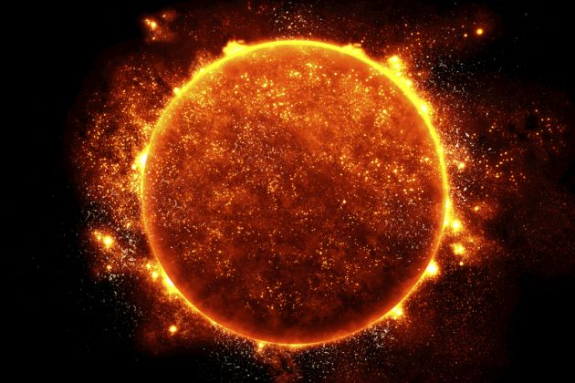
El calentamiento desigual de la superficie terrestre provoca diferencias de densidad en el aire. El aire cálido se expande y asciende, formando zonas de baja presión, mientras que el aire frío se contrae y desciende, generando zonas de alta presión. La fuerza del gradiente de presión mueve el aire desde regiones de alta hacia baja presión. Al mismo tiempo, la rotación de la Tierra desvía los vientos mediante el efecto Coriolis, estableciendo patrones de circulación global que son predecibles y que conservan el momento angular. En conjunto, estos procesos constituyen un motor térmico planetario que redistribuye energía y mantiene la estabilidad del clima terrestre.
5.1.1. Escalas espaciales de la circulación atmosférica
La circulación atmosférica ocurre en diversas escalas espaciales, cada una con características y tiempos propios. A escala planetaria, que abarca miles de kilómetros, predominan las células de Hadley, Ferrel y Polar, junto con las corrientes en chorro, que determinan la distribución global de presión, viento y calor. A escala sinóptica, de cientos a miles de kilómetros, los ciclones, anticiclones y sistemas frontales producen la mayoría de las variaciones meteorológicas diarias en latitudes medias. Finalmente, a mesoescala, que abarca decenas a cientos de kilómetros, fenómenos como tormentas, brisas costeras y flujos de montaña a valle modulan los patrones regionales de viento, temperatura y precipitación. Comprender cómo estas escalas interactúan es clave para interpretar el clima global y regional y para anticipar fenómenos hidrológicos extremos.
5.1.2. Circulación atmosférica e hidrología
La circulación general de los vientos redistribuye energía mediante procesos tanto horizontales como verticales. Las células de Hadley, Ferrel y Polar impulsan los vientos alisios, los vientos del oeste y los vientos polares del este. Al mismo tiempo, la convección vertical y la liberación de calor latente transfieren energía hacia niveles superiores de la atmósfera. En la alta troposfera, las corrientes en chorro y las ondas de Rossby guían los sistemas meteorológicos y transportan calor de los trópicos hacia latitudes medias y polares. La interacción con los océanos modula el clima mediante corrientes superficiales y oscilaciones climáticas de gran escala, como El Niño-Oscilación del Sur (ENSO), la Oscilación Decadal del Pacífico (PDO), el Modeo Anular del Sur (SAM) y la Oscilación de Madden-Julian (MJO).
Estas escalas y procesos interactúan continuamente, creando un continuo de movimiento que conecta lo planetario con lo local y define la dinámica atmosférica de la Tierra. La circulación atmosférica regula además la distribución de humedad y precipitación. Zonas de convergencia, como la Zona de Convergencia Intertropical (ITCZ), y frentes subpolares producen lluvias persistentes, mientras que las ramas descendentes de las células de Hadley y Polares generan regiones áridas. La variabilidad estacional e interanual, influida por monzones y oscilaciones como ENSO, PDO y SAM, modula la intensidad de las precipitaciones. Esto afecta directamente los caudales fluviales, la recarga de aguas subterráneas y la ocurrencia de fenómenos extremos como sequías e inundaciones. Además, la circulación atmosférica impulsa la interacción océano-atmósfera, conectando los trópicos con latitudes medias y polares, y regulando corrientes y temperaturas superficiales.
5.2. Redistribución de calor y energía en la Tierra
5.2.1. Desbalance de energía entre el ecuador y los polos
La distribución de la radiación solar sobre la superficie terrestre es inherentemente desigual debido a la forma esférica de nuestro planeta. Cerca del ecuador, los rayos solares inciden en la superficie en un ángulo perpendicular, concentrando una gran cantidad de energía por unidad de área. En cambio, en las latitudes más altas, la misma cantidad de energía entrante se distribuye sobre una superficie mucho mayor, ya que los rayos llegan con un ángulo poco pronunciado y deben atravesar una columna de atmósfera más densa, que absorbe y refleja una mayor proporción de la energía. Esta relación geométrica fundamental genera un excedente energético constante en las regiones tropicales y ecuatoriales y un déficit energético permanente en las regiones polares. Las latitudes medias actúan como una zona de transición, con un equilibrio casi total entre la energía entrante y saliente.
Sin un mecanismo que redistribuya este calor, el contraste de temperatura entre el ecuador y los polos se volvería tan extremo que haría el planeta inhabitable. La atmósfera y los océanos cumplen esta función vital, actuando como un sistema fluido, acoplado y dinámico, que transporta continuamente el exceso de energía hacia los polos, suavizando así los gradientes de temperatura y manteniendo un clima estable y habitable. Este proceso a gran escala se conoce como circulación atmosférica general. Esta circulación está impulsada por una jerarquía de principios físicos interconectados, desde la relación básica entre temperatura del aire y presión atmosférica hasta la compleja dinámica atmosférica de un planeta en rotación.
La cantidad de radiación solar que recibe la Tierra varía a lo largo del año debido a la inclinación del eje del planeta y su órbita alrededor del Sol. El eje de la Tierra está inclinado aproximadamente 23,5° con respecto a su plano orbital, una geometría fundamental para el origen de las estaciones del año. Esta inclinación hace que los rayos del Sol incidan en diferentes latitudes con ángulos y duraciones variables a lo largo del año, lo que afecta directamente a la energía recibida en la superficie.
{kind=link}
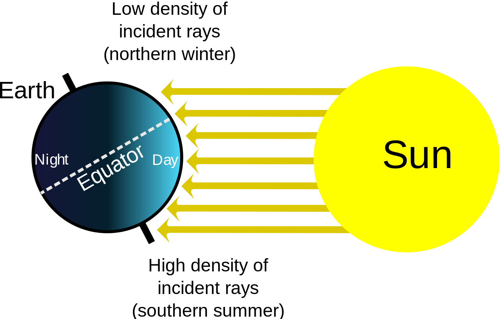
Durante el verano, en ambos hemisferios, el polo respectivo está inclinado hacia el Sol. Como resultado, los rayos solares inciden en la superficie en un ángulo más directo, distribuyendo su energía sobre un área menor, lo que aumenta la intensidad de la radiación por unidad de área. Además, las horas de luz son más largas, lo que da a la superficie más tiempo para acumular energía. Por el contrario, durante el invierno, el polo está inclinado en dirección contraria al Sol, lo que provoca que los rayos solares lleguen en un ángulo menor, dispersando la energía sobre un área mayor. Los días más cortos reducen aún más la radiación total recibida.
{kind=link}
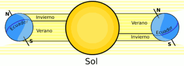
En las latitudes medias, estas variaciones estacionales son particularmente pronunciadas, lo que genera diferencias notables en la temperatura y el clima entre el verano y el invierno. Cerca del ecuador, el ángulo de incidencia solar cambia de forma menos drástica a lo largo del año, lo que resulta en variaciones estacionales más pequeñas en la radiación. En cambio, las regiones cercanas a los polos experimentan diferencias extremas: durante el verano polar, el Sol puede permanecer sobre el horizonte durante 24 horas, mientras que durante el invierno polar, el Sol puede no salir en absoluto, lo que produce períodos prolongados de luz y oscuridad.
Las variaciones estacionales en la radiación solar también influyen en la atmósfera y la hidrosfera. Una mayor radiación durante el verano provoca un mayor calentamiento de la superficie, lo que potencia la convección e influye en los patrones climáticos. En invierno, la reducción de la radiación contribuye al enfriamiento, alterando la distribución de la presión atmosférica y los patrones de viento. Estas variaciones en el aporte energético son impulsores fundamentales del sistema climático global, afectando fenómenos como los monzones, las trayectorias de las tormentas y el desarrollo de sistemas de presión a gran escala.
En general, la inclinación del eje de la Tierra y su movimiento orbital generan cambios estacionales predecibles en la distribución e intensidad de la radiación solar. Estos cambios son fundamentales para comprender la variabilidad climática, la dinámica de los ecosistemas y el ritmo anual de los patrones climáticos en todo el planeta.
5.2.2. Modulación estacional de la circulación atmosférica
El calentamiento desigual de la superficie terrestre crea una necesidad fundamental para que la atmósfera redistribuya energía desde las regiones con excedente cerca del ecuador hacia las regiones con déficit en los polos. Esta redistribución se logra mediante un complejo sistema de circulación que abarca toda la atmósfera. Para comprender cómo funciona esta circulación, son clave tres características interconectadas: la altura de los niveles superiores, las corrientes en chorro semipermanentes y la presión media a nivel del mar (MSLP).
Las alturas de niveles superiores (»upper-level heights») representan la altitud a la que se encuentran las superficies de presión constante, como 500 hPa, y varían según la temperatura y la densidad de la columna de aire subyacente. El aire más cálido y menos denso produce alturas mayores, mientras que el aire más frío y denso produce alturas menores. Estas variaciones crean ondulaciones en la atmósfera que aparecen como crestas (ridges) y valles o vaguadas (troughs) en los gráficos de presión constante. Las crestas, asociadas con alturas mayores, suelen corresponder a condiciones climáticas favorables o en mejora, mientras que las vaguadas, asociadas con alturas menores, se vinculan a condiciones inestables o en deterioro. Por lo tanto, las alturas en niveles superiores son esenciales para diagnosticar patrones atmosféricos a gran escala y pronosticar el tiempo. El nivel de 500 hPa representa una superficie de presión en la mitad de la troposfera, la cual se encuentra típicamente entre 5 y 5,5 km sobre el nivel del mar.
{kind=link}
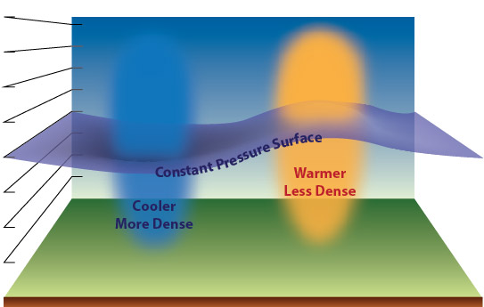
Figura que muestra como la densidad del aireinfluye en la altura de los niveles de presión atmosférica constante. Fuente: https://www.noaa.gov/jetstream/upper-air-charts/common-features-of-constant-pressure-charts
Por otra parte, las corrientes en chorro son corrientes de aire estrechas y rápidas cerca de la tropopausa que se forman donde los gradientes de temperatura son más pronunciados. Actuando como «autopistas» atmosféricas, dirigen los sistemas de tormentas, dirigen las masas de aire y regulan el transporte de energía y humedad hacia los polos. Los más prominentes son el chorro subtropical, asociado con la circulación de Hadley, y el chorro del frente polar, vinculado a los contrastes de temperatura entre las latitudes medias y los polos. Su posición e intensidad no son fijas, sino que varían sistemáticamente con las estaciones.
Finalmente, en la superficie terrestre la presión media a nivel del mar (MSLP) representa el peso de la columna atmosférica sobre un punto determinado de la superficie terrestre, y es una variable fundamental para comprender y monitorear la circulación general de la atmósfera, ya que proporciona una medida estandarizada de la presión atmosférica, independientemente de la altitud. Al permitir la comparación directa entre regiones, los gráficos de presión a nivel medio del mar revelan los gradientes horizontales que impulsan los vientos superficiales y resaltan la posición y evolución de los sistemas de alta y baja presión. Estos sistemas rigen los patrones meteorológicos a gran escala, controlando los campos de viento, la precipitación y las condiciones de buen tiempo, y su distribución configura la circulación global mediante la redistribución de la energía y el momento. Más allá de la predicción a corto plazo, la presión a nivel medio del mar también es esencial en la investigación climática, donde se utiliza para analizar las teleconexiones y evaluar cómo los cambios a largo plazo en la circulación atmosférica afectan al sistema climático terrestre. Las variaciones estacionales de la MSLP reflejan cambios en el calentamiento entre la tierra y el océano, lo que refuerza los cambios observados en las alturas de los niveles superiores y las corrientes en chorro. Por lo tanto, los patrones de la MSLP sirven como la contraparte superficial de la circulación en altura, que vincula la estructura vertical de la atmósfera con su dinámica horizontal.
Juntos, estos tres elementos forman la columna vertebral del sistema de circulación global. Las alturas en altura captan la respuesta vertical a los contrastes de calentamiento, las corrientes en chorro representan el equilibrio dinámico entre los gradientes de presión y el efecto Coriolis, y la presión media al nivel del mar (MSLP) expresa cómo se manifiesta esta dinámica en la superficie. Su variabilidad estacional refleja los cambios en el calentamiento solar, lo que las hace fundamentales para la organización de los sistemas meteorológicos y el mantenimiento del balance energético global.
La temperatura media del aire durante el verano y el invierno ejerce una influencia directa en las alturas de nivel superior, las corrientes en chorro y la presión a nivel del mar. Dado que la temperatura controla la densidad del aire, el aire cálido se expande y ocupa más volumen, mientras que el aire frío se contrae. Esta expansión o contracción térmica altera el espesor de las capas atmosféricas, modificando la altitud de las superficies de presión constante, como el nivel de 500 hPa, a la vez que modifica los patrones de presión superficial.
{kind=link}
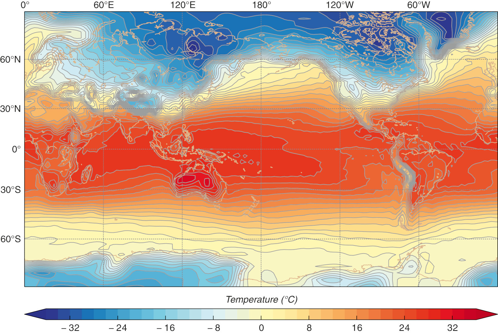
Temperatura media del aire durante Enero. Fuente: Hakim and Patoux (2018).
{kind=link}
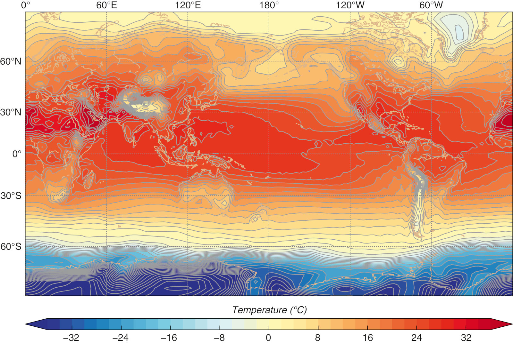
Temperatura media del aire durante Julio. Fuente: Hakim and Patoux (2018).
Durante el verano, el calentamiento de la troposfera, especialmente en las regiones tropicales y subtropicales, aumenta el espesor de la columna atmosférica. Esta expansión eleva la altura de las superficies de presión constante, lo que genera mayores alturas geopotenciales en niveles superiores. Los anticiclones subtropicales se fortalecen y se extienden hacia los polos, lo que a menudo se refleja en altos valores de MSLP sobre los océanos, que anclan los vientos alisios y las circulaciones monzónicas. El chorro subtropical se debilita a medida que disminuye el contraste de temperatura entre el ecuador y los polos, y las trayectorias de las tormentas se desplazan hacia los polos, redistribuyendo la precipitación.
{kind=link}
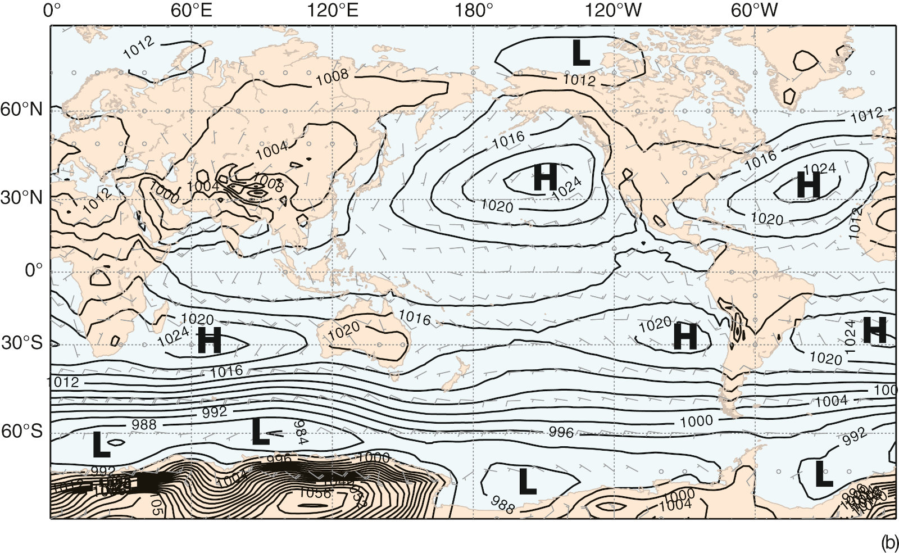
Presión atmosférica media a nivel del mar durante Julio. Fuente: Hakim and Patoux (2018).
En invierno, ocurre lo contrario. El enfriamiento de la atmósfera, especialmente en latitudes más altas, reduce el espesor de la columna atmosférica, reduciendo las alturas de nivel superior y profundizando los sistemas de bajas presiones superficiales. Fuertes anticiclones continentales, como el anticiclón siberiano (»Siberian High»), dominan Eurasia, mientras que anticiclones igualmente intensos se forman sobre América del Norte (por ejemplo, el anticiclón canadiense). Sobre los océanos, se desarrollan centros de bajas presiones profundas, en particular la baja presión islandesa sobre el Atlántico Norte y la baja presión aleutiana sobre el Pacífico Norte. Estos centros de bajas presiones anclan las trayectorias de las tormentas invernales, guiando los ciclones hacia Europa, el este del norte América y la cuenca del Pacífico.
{kind=link}
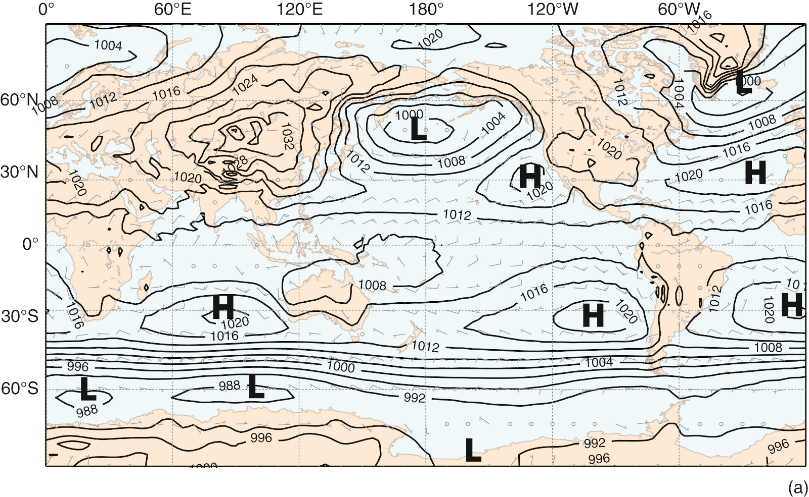
Presión atmosférica media a nivel del mar durante Enero. Fuente: Hakim and Patoux (2018).
Para julio, el patrón se invierte en el hemisferio norte. El intenso anticiclón de la estación fría sobre Siberia desaparece y es reemplazado por una vasta depresión térmica conocida como la depresión asiática (»Asian Low»), generada por el fuerte calentamiento del interior continental. Este sistema de baja presión desempeña un papel decisivo en el impulso de los monzones del sur y el este de Asia. Sobre los océanos, los anticiclones subtropicales, como el anticiclón de las Azores (»Azores High») y el anticiclón del Pacífico Norte, se expanden y migran hacia los polos, estabilizando el clima en las zonas subtropicales e influyendo en la intensidad de los vientos alisios. Mientras tanto, los anticiclones de las islas Islandesas y las Aleutianas se debilitan significativamente o desaparecen por completo, lo que refleja la disminución del contraste de temperatura entre el océano y la tierra.
A escala global, estos cambios ponen de relieve la reorganización estacional de los sistemas de presión superficial. La transición del anticiclón siberiano (»Siberian High») en invierno a la depresión asiática (»Asian Low») en verano ilustra el profundo impacto de las interacciones tierra-atmósfera en la circulación. Asimismo, la persistencia de bajas oceánicas como las bajas islandesas y aleutianas (»Icelandic and Aleutian Lows») en invierno, seguida de su debilitamiento en verano, pone de relieve el papel de los contrastes de temperatura superficial del mar en la configuración de las trayectorias de las tormentas. Estas oscilaciones en los patrones de MSLP ilustran cómo el ciclo estacional de calentamiento solar fortalece o debilita alternativamente los sistemas de presión en los hemisferios, lo que refuerza los cambios observados en la circulación en altura y las corrientes en chorro.
En resumen, el ciclo estacional de la temperatura media del aire configura la estructura vertical y horizontal de la atmósfera. Las alturas en altura, las corrientes en chorro semipermanentes y la presión media a nivel del mar actúan como componentes interconectados de la circulación global. Al responder conjuntamente a los contrastes de calentamiento estacional, regulan el desarrollo de tormentas, el transporte de energía y la distribución a gran escala de los sistemas meteorológicos, impulsando el ritmo del clima terrestre.
5.3. Fuerzas que controlan el movimiento atmosférico
La circulación atmosférica surge de la interacción de varias fuerzas físicas que actúan sobre las partículas de aire y determinan su movimiento a través del globo. En el nivel más fundamental, los vientos son impulsados por diferencias en la presión atmosférica, que surgen del calentamiento desigual de la superficie terrestre y la subsiguiente redistribución de energía. Sin embargo, el movimiento real del aire es mucho más complejo que un simple flujo desde alta a baja presión. La fuerza del gradiente de presión inicia el movimiento del aire, la fuerza de Coriolis desvía los vientos debido a la rotación de la Tierra y la fuerza centrífuga modifica el movimiento en trayectorias curvas. Estas fuerzas se ven además influenciadas por el arrastre turbulento cerca de la superficie y los procesos de advección que transportan el momento y la energía. Juntas, estas fuerzas producen los equilibrios fundamentales que rigen tanto los patrones climáticos locales como los sistemas de circulación global. Las siguientes secciones describen estas fuerzas y los equilibrios que se generan entre ellas, para lograr una interpretación adecuada tanto los patrones de circulación a gran escala como los sistemas meteorológicos locales.
5.3.1. Fuerza del gradiente de presión
La fuerza del gradiente de presión (PGF) es la causa fundamental del movimiento atmosférico. Surge de las variaciones espaciales en la presión, que impulsan el aire desde las regiones de mayor presión hacia las de menor presión. Su magnitud es proporcional a la diferencia de presión sobre una distancia determinada, y se expresa como:
donde \(\rho\) es la densidad del aire y \(\frac{\partial p}{\partial x}\) representa el gradiente de presión.
Si no existiera esta fuerza, la atmósfera permanecería estática y los vientos no existirían. En los mapas meteorológicos, la intensidad de la PGF se refleja en la separación de las isobaras: líneas muy juntas indican gradientes más fuertes y, por tanto, vientos más intensos.
El origen de estas diferencias de presión está en procesos que modifican la densidad del aire, como el calentamiento diferencial de la superficie, la liberación de calor latente o la convergencia y divergencia de masas de aire. Cuando el aire se calienta, se expande, disminuye su densidad y tiende a ascender, generando una región de baja presión. En contraste, el aire frío se contrae, aumenta su densidad y desciende, creando una zona de alta presión.
Este contraste de presión es el motor del viento: el aire se desplaza de manera natural desde las áreas de alta presión hacia las de baja presión en un intento por equilibrar las diferencias. La velocidad del viento resultante depende de la intensidad del gradiente: a mayor diferencia de presión en una distancia corta, más pronunciada será la PGF y más fuertes los vientos.
En síntesis, la PGF constituye el principio físico que da origen al movimiento atmosférico en todas sus escalas, desde las brisas locales hasta los patrones de la circulación general de la atmósfera.
{kind=link}
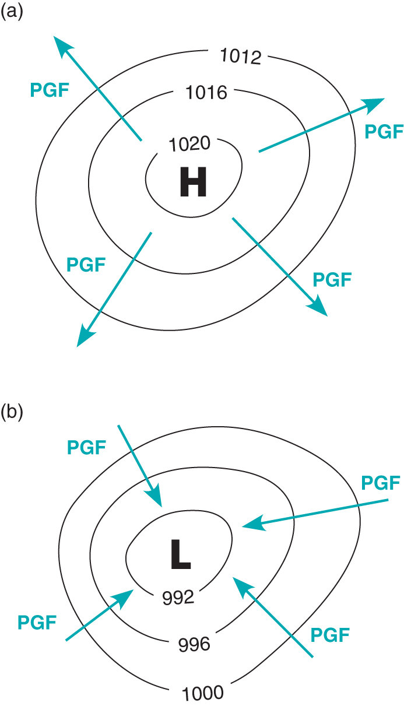
Distribución de la fuerza del gradiente de presión (PGF) alrreder de un centro de alta (panel a) y baja (panel b) presión. Fuente: Hakim and Patoux (2022).
5.3.2. Fuerza de Coriolis
Una vez que el aire comienza a moverse bajo la influencia del gradiente de presión (PGF), es desviado por la fuerza de Coriolis, una fuerza aparente resultante de la rotación de la Tierra. La fuerza de Coriolis actúa perpendicularmente al movimiento de la masa de aire, hacia la derecha en el hemisferio norte y hacia la izquierda en el hemisferio sur. Su fuerza depende tanto de la velocidad del aire en movimiento como de la latitud:
donde \(\Omega\) es la velocidad angular de la Tierra, \(V\) es la velocidad del viento, \(\phi\) es la latitud,
En el ecuador (\(\phi = 0^\circ\)), y por lo tanto la fuerza de Coriolis se desvanece, mientras que en los polos (\(\phi = 90^\circ\)) esta fuerza se maximiza. Esta variación tiene profundas consecuencias para la circulación global, explicando, por ejemplo, por qué los vientos alisios convergen hacia el ecuador en lugar de soplar directamente de norte a sur, y por qué los ciclones giran en direcciones opuestas en cada hemisferio.
El equilibrio entre la fuerza del gradiente de presión y la fuerza de Coriolis produce el viento geostrófico, que fluye paralelo a las isobaras rectas a gran altitud, generalmente por encima de la capa límite atmosférica, donde los efectos de fricción son insignificantes. El equilibrio geostrófico es una excelente aproximación para la circulación a gran escala en latitudes medias, como los vientos del oeste y las corrientes en chorro.
{kind=link}
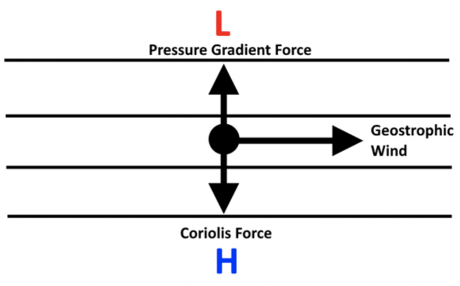
Diagrama que ilustra la interacción entre la fuerza del gradiente de presión, la fuerza aparente de Coriolis y la fuerza del viento geostrófico. Fuente: https://pressbooks-dev.oer.hawaii.edu/atmo.
5.3.3. Fuerza centrífuga
En la atmósfera real, las isobaras rara vez son rectas; con frecuencia son curvas, especialmente alrededor de sistemas de alta y baja presión. En estos casos, además del gradiente de presión y la fuerza de Coriolis, es necesario considerar la fuerza centrífuga, una fuerza aparente dirigida hacia afuera que surge cuando las parcelas de aire se desplazan a lo largo de trayectorias curvas. Su magnitud es proporcional al cuadrado de la velocidad del viento dividido entre el radio de curvatura:
donde \(V\) es la velocidad del viento y \(r\) es el radio de curvatura.
5.3.4. Resistencia turbulenta y capa límite atmosférica
Más cerca de la superficie terrestre, la fuerza de resistencia turbulenta desempeña un papel fundamental. La fricción entre el aire en movimiento y el suelo (u obstáculos superficiales como vegetación, edificios y montañas) ralentiza el viento, reduce su velocidad y altera su dirección. Este efecto es más pronunciado en la capa límite atmosférica (ABL), que suele extenderse desde la superficie hasta 0,3-3 km, dependiendo de las condiciones atmosféricas.
Dentro de la ABL, la turbulencia generada por la fricción mezcla el aire más lento cerca del suelo con el aire más rápido en altura. Como resultado, los vientos en la superficie no son geostróficos, sino que cruzan isobaras en ángulo, fluyendo parcialmente de alta a baja presión. Este mecanismo es crucial para fenómenos meteorológicos como la convergencia de la superficie hacia centros de baja presión, lo que a su vez favorece el movimiento ascendente y la formación de nubes.
Por lo tanto, la resistencia turbulenta actúa como un mecanismo regulador que vincula la circulación a gran escala con los procesos superficiales, proporcionando una retroalimentación entre la superficie terrestre y la atmósfera libre.
5.3.5. Advección: transporte de momentum
Aunque no es una fuerza propiamente tal en el sentido Newtoniano, la advección desempeña un papel importante en la configuración de la circulación atmosférica. La advección se refiere al transporte de propiedades del aire; como calor, humedad o momentum; por el movimiento del viento. Desde la perspectiva del momento, la advección describe cómo los vientos en un lugar pueden transportar momento a otro, modificando la velocidad o la dirección del viento localmente.
Este efecto es particularmente importante en el desarrollo de los sistemas meteorológicos. Por ejemplo, la advección de aire cálido o frío influye en los gradientes de presión y la estabilidad, mientras que la advección de momento afecta la evolución de las corrientes en chorro y la propagación de los sistemas de tormentas. Por lo tanto, si bien no es una fuerza en sí misma, la advección representa un proceso crucial en la redistribución de energía y momento en la atmósfera.
5.3.6. Balances de fuerzas
La interacción de estas fuerzas da lugar a varios balances de fuerzas característicos que sustentan la circulación atmosférica:
Balance geostrófico: El equilibrio entre la fuerza del gradiente de presión y la fuerza de Coriolis, válido para vientos rectilíneos a gran escala por encima de la capa límite.
Balance de vientos de gradiente: El triple equilibrio entre la fuerza del gradiente de presión, la fuerza de Coriolis y la fuerza centrífuga, relevante para vientos alrededor de ciclones y anticiclones.
Balance de vientos superficiales: Una modificación de los balances de vientos geostróficos o de gradiente por la resistencia turbulenta, que da lugar a vientos que cruzan isobaras y alimentan la convergencia y divergencia en la superficie.
Estos balances proporcionan un marco para interpretar la complejidad de la circulación atmosférica en contextos tanto globales como regionales.
5.3.6.1. Viento geostrófico
La fuerza del gradiente de presión (PGF) es la fuerza que inicia todo viento, causada por las diferencias de presión atmosférica. Actúa perpendicularmente a las isobaras, impulsando el aire desde las regiones de alta presión hacia las de baja presión. Si la Tierra no rotara, el aire se aceleraría directamente a lo largo de este gradiente de presión. Sin embargo, debido al efecto Coriolis, el aire en movimiento se desvía hacia la derecha en el hemisferio norte y hacia la izquierda en el hemisferio sur. La magnitud de esta desviación es proporcional a la velocidad del viento; a medida que el aire acelera, la fuerza de Coriolis se intensifica, curvando gradualmente la trayectoria del aire en movimiento.
Finalmente, el viento alcanza una velocidad a la que la fuerza de Coriolis equilibra exactamente la fuerza del gradiente de presión. En este punto, el aire deja de acelerar y fluye a una velocidad constante, paralela a las isobaras. Este flujo ideal se denomina viento geostrófico. Su velocidad depende de la intensidad del gradiente de presión; cuanto más cercanas estén las isobaras, más intensa será la fuerza de gradiente de presión (PGF) y más rápido será el viento geostrófico resultante. El efecto también es mayor en latitudes más altas, donde la fuerza de Coriolis es mayor.
Imagine una masa de aire en reposo. La fuerza de gradiente de presión (PGF), resultante de las diferencias de presión en la atmósfera, es la fuerza inicial que impulsa el aire. Siempre actúa para empujar el aire desde una zona de alta presión a una de baja presión, perpendicularmente a las isobaras. En cuanto la masa de aire comienza a moverse, la fuerza de Coriolis actúa sobre ella, desviando el aire en movimiento hacia la derecha en el hemisferio norte y hacia la izquierda en el hemisferio sur. La intensidad de esta desviación es directamente proporcional a la velocidad del viento; cuanto más rápido se mueve el aire, más intensa es la fuerza de Coriolis.
{kind=link}
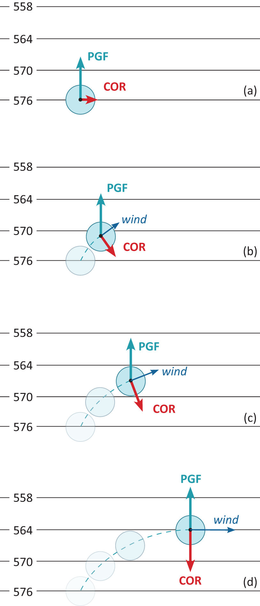
Ajuste del movimiento de una parcela de aire debido al balance geostrófico entre el gradiente de presión (PGF) y la fuerza aparente de Coriolis (COR). Fuente: Hakim and Patoux (2022).
En esencia, el viento geostrófico ilustra la relación entre el efecto Coriolis y el movimiento atmosférico. Mientras que la FGP genera viento al iniciar el movimiento de alta a baja presión, la fuerza de Coriolis modifica su dirección, impidiendo que el aire se desplace directamente hacia los centros de baja presión. Este equilibrio es fundamental para los patrones de circulación curva y espiral observados en ciclones y anticiclones, y para comprender la dinámica atmosférica a gran escala.
{kind=link}
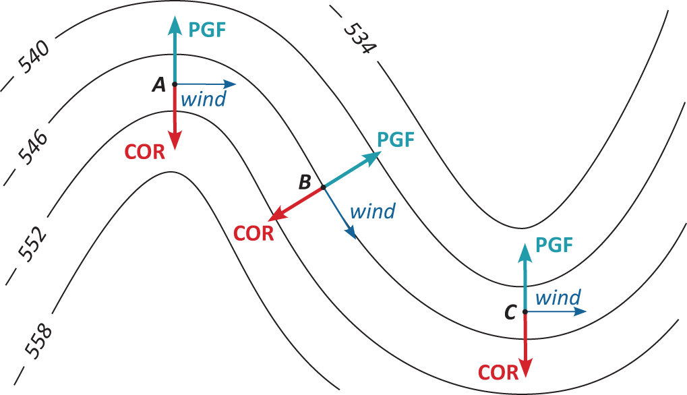
Identificación de la fuerza del gradiente de presión (PGF), la fuerza aprente de Coriolis (COR), la velocidad y dirección del viento a partir de map de isobaras, asumiendo balance geostrófico. Fuente: Hakim and Patoux (2022).
5.3.6.2. Viento de gradiente
Cuando el viento se mueve en una trayectoria curva, entran en juego tres fuerzas principales. La primera es la fuerza de gradiente de presión, que empuja el aire desde las zonas de alta hacia las de baja presión. La segunda es la fuerza de Coriolis, que desvía el movimiento debido a la rotación de la Tierra. Finalmente, aparece la fuerza centrífuga, que surge precisamente porque la trayectoria no es recta. Cuando estas tres fuerzas se equilibran, el viento no se acelera ni cambia su trayectoria, y se alcanza una situación conocida como balance de viento de gradiente. Este equilibrio puede expresarse mediante la siguiente relación matemática:
donde \(f\) es el parámetro de Coriolis, \(\rho\) es la densidad del aire y \(\frac{\partial p}{\partial n}\) es el gradiente de presión normal a las isobaras.
La interacción entre estas fuerzas depende del tipo de sistema de presión. En los ciclones (bajas presiones), la fuerza centrífuga se opone parcialmente a la de Coriolis, lo que genera vientos más débiles que en el caso puramente geostrófico. En los anticiclones (altas presiones), en cambio, las fuerzas de Coriolis y centrífuga se refuerzan, requiriendo vientos más intensos para mantener el equilibrio.
El viento geostrófico puede considerarse un caso límite del viento de gradiente, válido cuando las isobaras son rectas (\(r \to \infty\)) y el término centrífugo desaparece. Sin embargo, dado que la curvatura es común en la atmósfera, el viento de gradiente ofrece una descripción más realista de los movimientos a gran escala.
Este equilibrio de tres fuerzas es clave para comprender la circulación atmosférica global. Fenómenos como las altas subtropicales, los vientos del oeste de latitudes medias o los vórtices polares están asociados a patrones isobáricos curvos en los que la aproximación geostrófica resulta insuficiente. Asimismo, la corriente en chorro subtropical, que se forma en el límite polar de la célula de Hadley, sigue trayectorias ondulantes donde el viento de gradiente explica las desviaciones del flujo rectilíneo. Del mismo modo, los ciclones y anticiclones de latitudes medias deben gran parte de su estructura dinámica a este balance.
{kind=link}
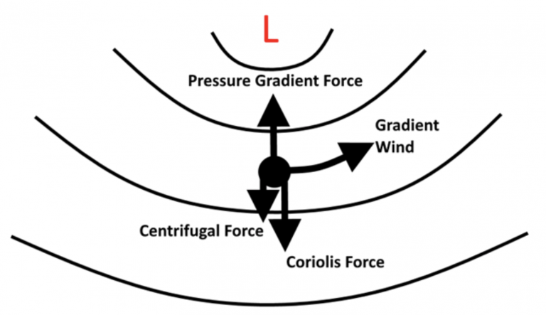
Diagrama que ilustra la interacción entre la fuerza del gradiente de presión, la fuerza aparente de Coriolis y la fuerza del viento de gradiente y la fuerza centrífuga. Fuente: https://pressbooks-dev.oer.hawaii.edu/atmo.
5.3.6.3. Balance de los vientos superficiales
Cerca de la superficie terrestre, el movimiento del viento resulta de la interacción de varias fuerzas que actúan simultáneamente sobre las partículas de aire. A diferencia de la atmósfera libre, donde el equilibrio entre la fuerza del gradiente de presión y la fuerza de Coriolis suele predominar (equilibrio geostrófico), los vientos superficiales se ven fuertemente influenciados por la fricción con la superficie terrestre, que modifica tanto su velocidad como su dirección. Comprender este equilibrio es esencial para interpretar los sistemas meteorológicos y las condiciones climáticas locales.
La fuerza del gradiente de presión impulsa el aire de altas a bajas presiones, pero la fuerza de Coriolis lo desvía, generando un flujo casi paralelo a las isobaras. El equilibrio entre ambas origina el viento geostrófico. En ausencia de fricción, estas dos fuerzas alcanzan un equilibrio dinámico, produciendo el viento geostrófico. Sin embargo, en la superficie terrestre la interacción del aire en movimiento con la rugosidad de la superficie terrestre (océanos, vegetación, montañas, estructuras urbanas) da orgen a la fuerza de fricción, la cual actúa en dirección contraria a la dirección de avance del viento. Dado que la fuerza de Coriolis es proporcional a la velocidad del viento, su efecto se debilita cerca del suelo. Como resultado, la fuerza del gradiente de presión no se equilibra completamente con la fuerza de Coriolis, y el viento adquiere una componente dirigida hacia una presión más baja. Esto genera un flujo que cruza las isobaras en ángulo, en lugar de seguirlas.
El ángulo en el que los vientos superficiales cruzan las isobaras depende de la rugosidad de la superficie. Sobre los océanos, donde la fricción es baja, este ángulo suele variar entre 10° y 20°. En cambio, sobre tierra, donde la fricción es mayor, el ángulo de cruce aumenta típicamente a valores entre 25° y 45°. Además, la velocidad del viento en superficie se reduce en comparación con la que se observa en la atmósfera libre, debido a la influencia de la fricción.
En conjunto, una triple interacción de fuerzas define el balance de los vientos superficiales: la fuerza del gradiente de presión impulsa el flujo, la fuerza de Coriolis lo desvía y la fricción disminuye la velocidad del viento, permitiendo que el aire cruce las isobaras en dirección hacia las bajas presiones. Este equilibrio tiene implicaciones meteorológicas directas. Alrededor de los sistemas de baja presión superficial, los vientos giran en espiral hacia adentro, convergiendo y, a menudo, provocando movimiento ascendente y la formación de nubes. Alrededor de los sistemas de alta presión, los vientos giran en espiral hacia afuera y divergen, lo que favorece la subsidencia y, en general, condiciones más despejadas. El balance del viento superficial es, por tanto, un mecanismo clave que vincula la dinámica atmosférica con el tiempo y el clima.
5.3.7. Implicaciones para la circulación atmosférica
A escala global, la interacción de estas fuerzas organiza la atmósfera en células de circulación características. Las células de Hadley, Ferrel y Polar están conformadas por la fuerza del gradiente de presión generada por los contrastes térmicos, las deflexiones impuestas por la fuerza de Coriolis y las modificaciones por la fricción cerca de la superficie. Las altas presiones subtropicales, los vientos alisios y los vientos polares del este son producto de estos equilibrios de fuerzas.
Las corrientes en chorro, que serpentean a lo largo de pronunciados gradientes de presión en los límites de las células de circulación, son ejemplos de equilibrio geostrófico y de vientos de gradiente en funcionamiento. De igual manera, los ciclones y anticiclones reflejan el papel de la fuerza centrífuga en el flujo curvo. Finalmente, la fricción superficial asegura que la circulación global esté dinámicamente vinculada al intercambio de momento, humedad y energía entre la atmósfera y la superficie terrestre.
Al comprender cómo interactúan estas fuerzas, los meteorólogos y los científicos del clima pueden interpretar mejor la dinámica atmosférica, predecir fenómenos meteorológicos y comprender los mecanismos que vinculan los desequilibrios energéticos en la superficie terrestre con la estructura a gran escala de los vientos en todo el planeta.
5.4. El motor convectivo de la atmósfera
5.4.1. Procesos adiabáticos
Más allá del transporte horizontal de calor, los procesos verticales son igualmente importantes para la circulación atmosférica global. La convección es el mecanismo principal de transferencia de energía vertical, en el cual el aire cálido y flotante asciende desde superficies calientes. Este proceso es particularmente intenso en los trópicos y dentro de la Zona de Convergencia Intertropical (ITCZ), donde el intenso calentamiento solar y la abundante humedad alimentan las tormentas eléctricas y otros sistemas convectivos.
A medida que una masa de aire asciende, encuentra una menor presión, lo que provoca su expansión y enfriamiento, un proceso conocido como enfriamiento adiabático. En el aire no saturado, la temperatura disminuye aproximadamente 9,8 °C por kilómetro. En el aire húmedo, el enfriamiento eventualmente conduce a la condensación del vapor de agua en nubes, liberando calor latente. Este calor calienta el aire circundante, mejorando la flotabilidad e impulsando un mayor ascenso. La liberación de calor latente es un factor clave de la circulación atmosférica, proporcionando la energía que impulsa sistemas convectivos como tormentas eléctricas y huracanes. La circulación de Hadley, en particular, funciona como un vasto motor térmico alimentado principalmente por el calor latente transportado desde la superficie del océano hasta la atmósfera superior, lo que convierte al ciclo hidrológico en un componente integral del sistema climático.
El movimiento vertical se rige por la relación entre la temperatura y la presión del aire, ya que el aire se comporta aproximadamente como un gas ideal. El aire ascendente se expande y se enfría, mientras que el descendente se comprime y se calienta. Estos procesos adiabáticos explican la estructura vertical de la temperatura de la atmósfera:
Expansión y enfriamiento: El aire ascendente se expande en respuesta a una menor presión, realizando trabajo a expensas de la energía interna, lo que reduce la temperatura.
Compresión y calentamiento: El aire descendente encuentra mayor presión, se comprime y se calienta. Este proceso explica fenómenos como los vientos foehn o chinook, donde el aire descendente se calienta rápidamente sin aporte de calor externo.
Dos gradientes térmicos característicos cuantifican estos procesos:
Gradiente adiabático seco (\(\sim\) 9,8 °C/km), aplicable al aire no saturado.
Gradiente adiabático húmedo (\(\sim\) 4–7 °C/km), aplicable cuando la condensación libera calor latente, reduciendo la velocidad de enfriamiento.
Esta dinámica de presión y temperatura explica por qué el aire ascendente en regiones de baja presión suele producir nubes y precipitaciones, mientras que el aire descendente en regiones de alta presión favorece el calentamiento, la desecación y cielos despejados. Dentro del balance térmico global, la interacción entre el movimiento vertical, los procesos adiabáticos y el calor latente garantiza que el aire húmedo ascendente en los trópicos y el aire seco descendente en los subtrópicos redistribuyan conjuntamente la energía tanto vertical como horizontalmente por todo el planeta.
5.4.2. Liberación de calor latente
La liberación de calor latente es un proceso fundamental en la dinámica de la atmósfera, en particular en el impulso de la convección y el movimiento vertical. Cuando el vapor de agua se condensa en agua líquida o se congela formando hielo, el cambio de fase libera energía en forma de calor latente, calentando el aire circundante. Esta adición de energía reduce la densidad de la parcela de aire en relación con su entorno, lo que aumenta su empuje y promueve el movimiento ascendente. Por el contrario, durante la evaporación o el derretimiento, el calor latente se absorbe del entorno, enfriando el aire circundante.
{kind=link}
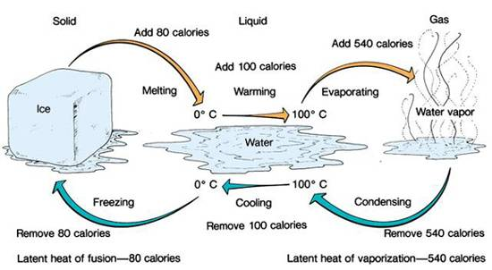
Flechas naranjas y azules representan adición y liberación de calor latente, respectivamente. La cantidad de calorías consumidas o liberadas corresponden a un gramo de agua. Fuente: http://www.alchemical.org/thermo/latentheat.html.
En el contexto de sistemas convectivos, como tormentas eléctricas, ciclones tropicales y circulación monzónica, la liberación de calor latente amplifica la aceleración vertical de las parcelas de aire, permitiéndoles ascender a mayor altura en la troposfera que en condiciones adiabáticas puramente secas. Este proceso fortalece las corrientes ascendentes, promueve la formación de nubes y contribuye al desarrollo de nubes convectivas profundas. También refuerza los patrones de circulación a gran escala: por ejemplo, la rama ascendente de la célula de Hadley se mantiene en parte gracias a la liberación continua de calor latente de la convección tropical.
La liberación de calor latente desempeña un papel fundamental en el transporte de energía atmosférica, transfiriendo calor desde la superficie y la troposfera inferior a altitudes superiores, donde puede influir en los vientos y las corrientes en chorro en niveles superiores. También está estrechamente vinculada a los mecanismos de retroalimentación de los sistemas climáticos, ya que una mayor convección puede modificar los patrones de precipitación, redistribuir la humedad y afectar la estabilidad de la atmósfera. En esencia, el calor latente es un factor clave tanto de la actividad convectiva a pequeña escala como de la circulación atmosférica a gran escala, vinculando la termodinámica con el movimiento dinámico en la atmósfera.
5.5. Modelos idealizados de circulación atmosférica
5.5.1. Modelo de celda única
La atmósfera terrestre exhibe un patrón de circulación a gran escala que redistribuye el calor y la humedad desde el ecuador hacia los polos.
A finales del siglo XVII, Edmond Halley (1656–1742) realizó uno de los primeros intentos científicos para explicar los persistentes vientos alisios del este. Argumentó que el calentamiento diario de la Tierra por el Sol era la fuerza impulsora. En su opinión, a medida que el Sol calentaba la superficie terrestre, el aire caliente ascendía y el aire más frío del este fluía para reemplazarlo. Sugirió que la progresión del Sol hacia el oeste en el cielo creaba la apariencia de vientos que soplaban constantemente de este a oeste. Si bien la explicación de Halley vinculaba los vientos con el calentamiento solar de una manera innovadora, no tenía en cuenta la influencia de la rotación terrestre. En consecuencia, su modelo no podía explicar por completo el patrón global de los vientos alisios.
Varias décadas después, George Hadley (1685–1768) ofreció una teoría más completa. En 1735, Hadley propuso que el aire caliente cerca del ecuador asciende y luego se desplaza hacia los polos a mayor altitud. A medida que este aire se aleja del ecuador, la rotación de la Tierra lo desvía hacia el oeste, generando los vientos alisios del este que se observan en los trópicos. La idea de Hadley sentó las bases de lo que hoy se conoce como la Celda de Hadley, una circulación a gran escala en la que el aire ecuatorial cálido asciende, se desplaza hacia las regiones subtropicales en altura, desciende alrededor de los 30° de latitud y regresa hacia el ecuador en la superficie en forma de vientos alisios.
{kind=link}
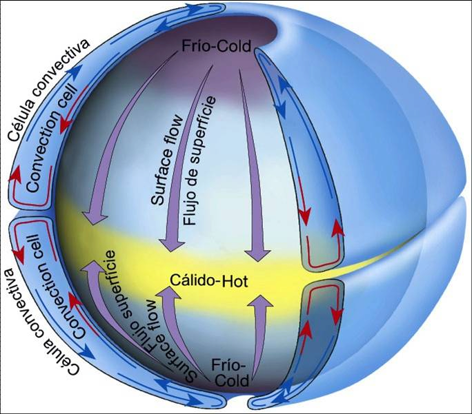
Modelo idealizado de celda única para la circulación atmosférica.
En conjunto, las contribuciones de Halley y Hadley marcaron un paso importante en la comprensión científica de la circulación atmosférica. Halley fue el primero en conectar el calentamiento solar con los sistemas de vientos persistentes, pero su teoría carecía del elemento crucial de la rotación de la Tierra. Hadley aportó esa pieza faltante, produciendo la primera explicación coherente de la circulación tropical. Su modelo sigue siendo fundamental, aunque mejoras posteriores lo expandieron al sistema de tres células (células de Hadley, Ferrel y Polar) que sustenta la climatología moderna.
5.5.2. Efecto de la rotación terrestre
Si bien la fuerza del gradiente de presión (PGF) genera el viento, es la rotación terrestre la que configura la circulación a gran escala en los complejos patrones observados globalmente. Esta influencia se describe mediante el efecto Coriolis, una desviación aparente de los objetos en movimiento, incluidas las corrientes de aire y oceánicas, cuando se observan desde un sistema de referencia giratorio. En el hemisferio norte, las partículas en movimiento se desvían hacia la derecha de su trayectoria; en el hemisferio sur, hacia la izquierda. Sin este efecto, los vientos fluirían directamente de alta a baja presión.
El efecto Coriolis surge de la conservación del momento angular en un sistema en rotación y se describe mediante la fuerza de Coriolis, una desviación aparente observada en el marco de referencia giratorio de la Tierra. Debido a que la Tierra gira hacia el este como un cuerpo sólido, los puntos cercanos al ecuador recorren una mayor distancia en 24 horas que los puntos en latitudes más altas, lo que les otorga una mayor velocidad hacia el este. Cuando una masa de aire se desplaza desde el ecuador hacia los polos, conserva este mayor momento y parece desviarse hacia el este sobre la superficie de movimiento más lento. Por el contrario, el aire que se desplaza desde latitudes más altas hacia el ecuador tiene un momento más lento y parece desviarse hacia el oeste. Esta desviación afecta a todas las masas de aire en movimiento y otros objetos, regulando las trayectorias curvas de los vientos y las circulaciones atmosféricas a gran escala, y configurando la rotación de ciclones, anticiclones y corrientes oceánicas.
{kind=link}
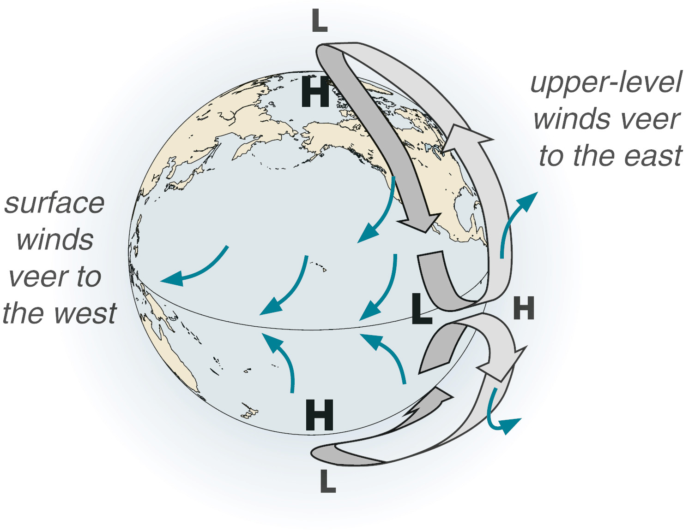
Efecto de la rotación de la Tierra sobre los vientos en altura y superficiales.
En el hemisferio norte, la fuerza de Coriolis desvía el aire en movimiento hacia la derecha de su trayectoria. Por ejemplo, el aire que se desplaza desde una latitud más baja hacia latitudes más altas, como del ecuador al Polo Norte, tiene una mayor velocidad hacia el este que la superficie que se encuentra debajo. A medida que el aire se desplaza hacia el norte, sobrepasa el suelo, que se mueve más lentamente, lo que resulta en una desviación percibida hacia la derecha. Por el contrario, el aire que se desplaza desde latitudes más altas hacia latitudes más bajas, como del Polo Norte al ecuador, se mueve más lentamente que la superficie que se encuentra debajo. Esto provoca que se retrase, y un observador también percibe una desviación hacia la derecha. Esta desviación hacia la derecha es un factor crítico en la configuración de los sistemas meteorológicos a gran escala. En los sistemas de baja presión (ciclones), el aire converge hacia el centro de baja presión. La fuerza de Coriolis desvía este aire convergente hacia la derecha, produciendo una espiral en sentido antihorario. En los sistemas de alta presión (anticiclones), el aire diverge del centro de alta presión y la desviación hacia la derecha hace que el aire desplace una espiral en sentido horario.
En el Hemisferio Sur, la fuerza de Coriolis actúa en sentido opuesto, desviando el aire en movimiento hacia la izquierda de su dirección de desplazamiento. Esto se debe a que la perspectiva de la rotación de la Tierra se invierte cuando se observa desde el Polo Sur. El aire que se desplaza desde el ecuador hacia latitudes meridionales más altas tiene una mayor velocidad hacia el este que la superficie subyacente, lo que produce una desviación hacia la izquierda. El aire que se desplaza desde latitudes más altas hacia el ecuador se retrasa respecto a la superficie, que se mueve más rápido, lo que también resulta en una desviación hacia la izquierda. Esta desviación hacia la izquierda determina de forma similar la rotación de los sistemas meteorológicos en el hemisferio sur. Los ciclones, donde el aire converge hacia un centro de baja presión, giran en sentido horario debido a la fuerza de Coriolis, mientras que los anticiclones, donde el aire diverge de un centro de alta presión, giran en sentido antihorario.
La intensidad de la fuerza de Coriolis varía con la latitud, siendo más intensa en los polos y disminuyendo gradualmente hasta cero en el ecuador. Esto explica por qué los ciclones tropicales no se forman directamente en el ecuador, donde el efecto Coriolis es insuficiente para inducir el movimiento de rotación.
Velocidades de puntos a diferentes latitudes y el efecto Coriolis
La velocidad horizontal de los puntos en la superficie terrestre varía con la latitud, ya que la Tierra es una esfera en rotación. Por lo tanto, los puntos en diferentes latitudes deben recorrer distancias diferentes para completar una rotación completa en el mismo tiempo. Dado que la distancia es mayor en el ecuador, la velocidad es máxima allí y disminuye hacia los polos, donde la distancia es menor y la velocidad es cercana a cero.
A continuación, se detalla el motivo:
La Tierra gira como un cuerpo sólido: cada punto de la Tierra completa una rotación en aproximadamente 24 horas.
La circunferencia varía con la latitud: en el ecuador, un punto en la superficie recorre la máxima distancia posible (la circunferencia de la Tierra). A latitudes más altas, la circunferencia de la Tierra disminuye.
Más rápido en el ecuador, más lento en los polos: para cubrir una distancia mayor en el mismo tiempo, un punto en el ecuador se mueve más rápido que un punto a mayor latitud. Por el contrario, un punto más cercano a los polos recorre una distancia menor en el mismo período de 24 horas y, por lo tanto, tiene una velocidad horizontal menor.
En términos simples, imaginemos un disco giratorio. El centro del disco está estacionario y representa los polos de la Tierra. Los puntos más alejados del centro deben recorrer un círculo mucho mayor para completar una rotación. Para mantener el ritmo de la rotación del disco, estos puntos exteriores deben moverse más rápido que los puntos más cercanos al centro.
La velocidad en cualquier latitud se puede calcular multiplicando la velocidad ecuatorial por el coseno de la latitud. Por lo tanto, la velocidad horizontal de un punto de la Tierra está directamente relacionada con su distancia al eje de rotación, que es máxima en el ecuador y cero en los polos:
{kind=link}
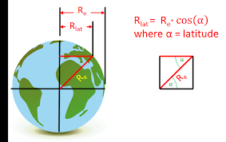
Velocidad de rotación de un punto de la superficie terrestre en la latitud \(R_{lat}\).
donde:
\(R_e = 6.4 x 10^6\) m
\(V = \omega \cdot R_{lat}\)
\(V = \frac{2 \cdot \pi}{T} \cdot R_{lat}\)
\(V = \frac{2 \cdot \pi}{T} \cdot R_e \cdot cos(\alpha)\)
{kind=link}
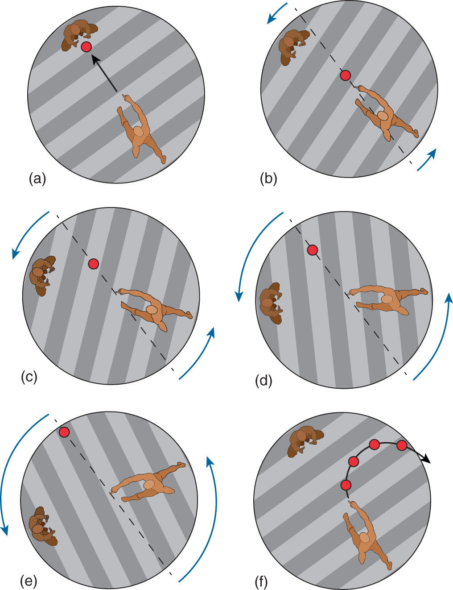
Movimiento aparente de una pelota arrojada desde un carrusel que gira en sentido antihorario. Fuente: Hakim and Patoux (2022).
5.5.3. El modelo de tres celdas
El modelo de celda única propuesto por Halley ignoraba la influencia de la rotación terrestre y el efecto Coriolis, por lo que no lograba explicar la ocurrencia de los vientos alisios (provenientes del este).
En 1735 George Hadley logró un avance significativo en la explicación de la circulación atmosférica, al introducir el efecto de la rotación terrestre. Demostró que, al fluir el aire hacia el ecuador en la superficie, se desviaba hacia el oeste debido a la fuerza de Coriolis, creando los vientos alisios del este. Aunque Hadley seguía suponiendo una sola célula de rotación por hemisferio, su trabajo fue revolucionario, dando origen a lo que hoy llamamos la celda de Hadley.
En el siglo XIX, William Ferrel introdujo mejoras posteriores, reconociendo que un sistema de celda única no podía explicar los vientos del oeste predominantes observados en latitudes medias. Ferrel propuso la existencia de una segunda celda de circulación atmosférica, ahora conocida como la celda de Ferrel, impulsada indirectamente y que opera entre las celdas de Hadley y polares.
Hoy en día sabemos que los efectos combinados del calentamiento solar, los gradientes de presión y la fuerza de Coriolis dan lugar a un sistema continuo y de gran escala de movimiento atmosférico conocido como el modelo de tres celdas. Este marco, desarrollado a lo largo de siglos de estudios meteorológicos, describe la circulación general de la atmósfera en cada hemisferio, a través de tres celdas de circulación distintas: las celdas de Hadley, Ferrel y Polar. en conjunto, estas celdas rigen los patrones de viento predominantes, influyen en las zonas climáticas y determinan los sistemas meteorológicos en todo el planeta.
Celdas de Hadley (0°-30° de latitud): Las celdas de Hadley son una circulación térmica directa, lo que significa que son impulsadas directamente por el calor solar. El proceso comienza en el ecuador, donde la intensa radiación solar calienta la superficie y el aire que la cubre, disminuyendo su densidad y ascendiendo. Esta zona de aire ascendente y baja presión se conoce como Zona de Convergencia Intertropical (ITCZ). A gran altitud, el aire fluye hacia los polos, enfriándose gradualmente y volviéndose más denso. Aproximadamente a los 30° de latitud, el aire se ha enfriado lo suficiente como para descender, creando sistemas persistentes de alta presión en la superficie, conocidos como altas subtropicales. Este aire descendente es seco y cálido, un fenómeno que explica la ubicación de los principales desiertos del mundo, como el Sahara, Atacama y el interior de Australia. En la superficie, este aire fluye de regreso hacia la ITCZ de baja presión para completar el ciclo. A medida que avanza hacia el ecuador, es desviado hacia el oeste por el efecto Coriolis, lo que produce los vientos alisios (»trade winds») constantes. Estos vientos, producto directo de la circulación de Hadley, fueron históricamente cruciales para la navegación transoceánica y hoy son vitales para transportar calor y humedad a través de los trópicos.
Celdas Polares (60°–90° de latitud): Las celdas polares, las más pequeñas y débiles de las tres, son una circulación térmica directa impulsada por el frío extremo en los polos. Sobre los polos, el aire frío y denso desciende, creando una región de alta presión superficial. Este aire fluye entonces hacia el ecuador en la superficie, donde el efecto Coriolis lo desvía hacia el oeste, creando los vientos polares del este. Alrededor de los 60° de latitud, este aire polar gélido se encuentra con el aire más cálido de las latitudes medias en un límite dinámico conocido como frente polar. El aire polar se ve obligado a ascender sobre el aire más cálido, completando el circuito de circulación de la celda polar. Este límite es una zona crucial para el desarrollo de ciclones de latitudes medias, esenciales para la transferencia de aire polar frío hacia el ecuador y aire más cálido de latitudes medias hacia los polos.
{kind=link}
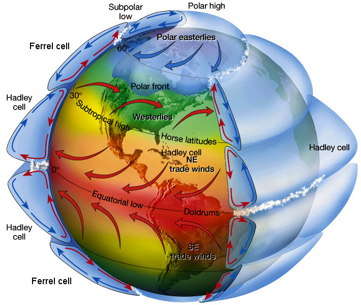
Modelo de tres celdas de la circulación atmosférica global, con foco en el patrón de vientos.
Celdas de Ferrel (30°–60° de latitud): Las celdas de Ferrel se ubican en las latitudes medias y representan una circulación indirecta. A diferencia de las celdas de Hadley y polares, impulsadas térmicamente, la celda de Ferrel funciona como un «engranaje» entre ellas. En la celda de Ferrel los vientos superficiales fluyen desde el equador hacia los polos, desde las altas temperaturas subtropicales hacia las bajas temperaturas subpolares ubicadas alrededor de los 60° de latitud. Este flujo superficial hacia los polos es desviado hacia el este por el efecto Coriolis, dando lugar a los vientos del oeste (»westerlies») predominantes. Estos vientos del oeste son responsables de los sistemas meteorológicos variables, típicos de las latitudes medias de Europa y Norteamérica. Por otra parte, en altura la circulación tmosférica se dirige hacia el ecuador desde los polos. La celda de Ferrel no es un simple circuito convectivo; sino que se mantiene en gran medida gracias a la interacción dinámica con sistemas meteorológicos transitorios, como ciclones y anticiclones extratropicales, que actúan como potentes mecanismos de transporte de calor hacia los polos en las latitudes medias.
{kind=link}
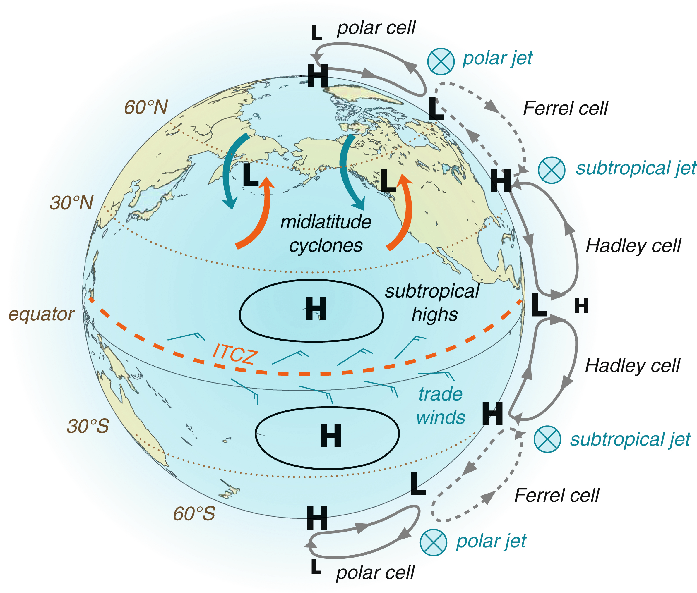
Modelo de tres celdas de la circulación atmosférica global, con foco en los centros de alta (H) y baja (L) presión.
En los límites entre estas celdas se desarrollan fuertes gradientes horizontales de temperatura, especialmente entre las regiones tropicales y subtropicales y a lo largo del frente polar. Estas zonas [1] baroclínicas son fundamentales para el desarrollo de las corrientes en chorro (ver sección Corrientes en chorro y ondas de Rossby).
Notas al pie
De esta forma, el modelo de tres celdas proporciona un marco sólido para comprender la circulación global. Sin embargo, es una simplificación idealizada que omite el papel crucial de los sistemas meteorológicos transitorios y el flujo caótico, que son los verdaderos caballos de batalla del transporte de calor en las latitudes medias. La celda de Ferrel, en particular, es una propiedad emergente de estos procesos dinámicos, más que un bucle de convección térmico directo y estable.
Las celdas de circulación atmosférica global hacen más que redistribuir el calor desde el ecuador hacia los polos; también establecen áreas semipermanentes de alta y baja presión, que influyen fuertemente en los patrones climáticos regionales. Por ejemplo, las ramas descendentes de las células de Hadley forman zonas subtropicales de alta presión, lo que lleva a condiciones áridas en desiertos como el Sahara y el interior de Australia. Por el contrario, las ramas ascendentes cerca del ecuador crean regiones persistentes de baja presión, lo que resulta en la convección frecuente y las fuertes lluvias características de las selvas tropicales. De manera similar, las celdas de Ferrel y Polar generan sistemas de presión de latitudes medias y polares que dan forma a los climas templados y polares, respectivamente. De esta manera, la disposición de las celdas de circulación atmosférica sustenta la distribución global de las zonas climáticas, vinculando la dinámica a gran escala con el clima local y los patrones de precipitación.
{kind=link}
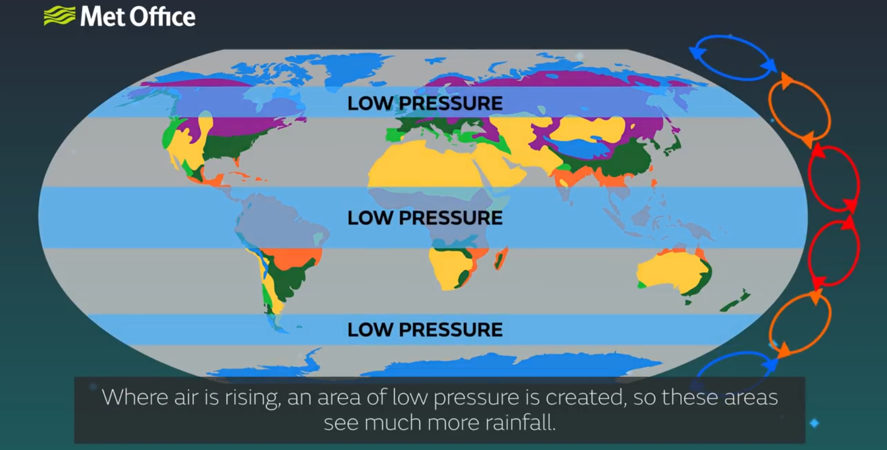
Áreas semi-permanentes de baja y alta presión, y sus correspondientes zonas climáticas.
5.5.4. Principales vientos globales
El modelo de tres celdas explica directamente la existencia y dirección de los tres principales cinturones de viento globales en la superficie terrestre. Estos vientos son una característica predecible y persistente del sistema climático y son resultado directo de los gradientes de presión y las deflexiones de Coriolis dentro de cada celda.
{kind=link}
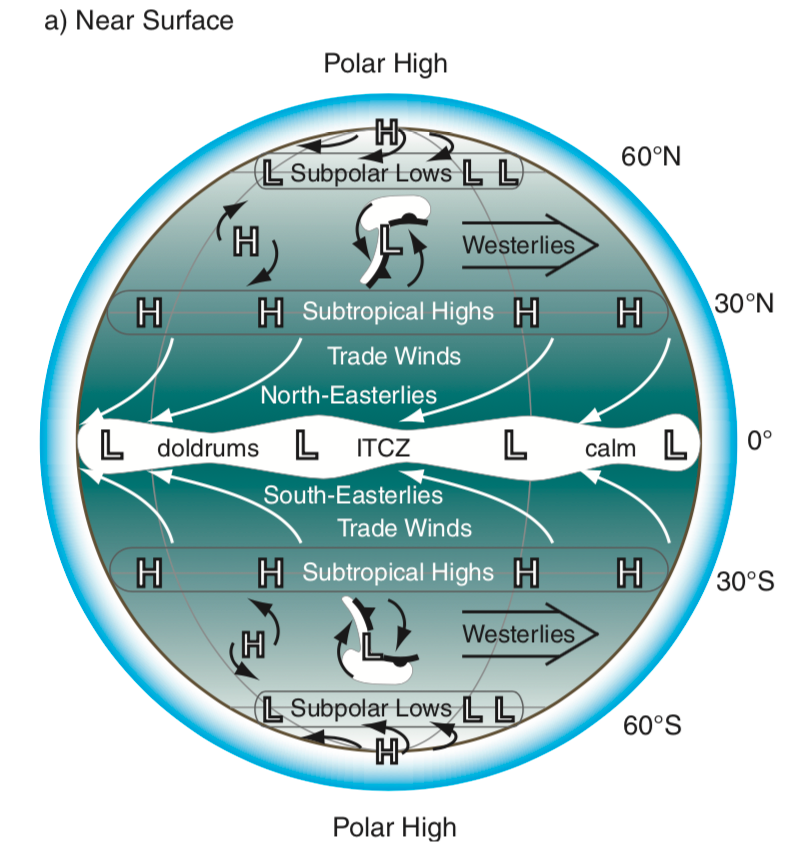
Principales patrones de viento a escala global.
Vientos Alisios (0°–30° de latitud): Los vientos alisios (»trade winds») son vientos constantes y persistentes del este que predominan en los trópicos. Se originan en la rama descendente de la celda de Hadley, a unos 30° de latitud, donde los sistemas de alta presión superficial (las altas presiones subtropicales) empujan el aire hacia el ecuador. A medida que este aire fluye hacia el ecuador, el efecto Coriolis lo desvía hacia el oeste, produciendo los vientos alisios del noreste en el hemisferio norte y los vientos alisios del sureste en el hemisferio sur. Los vientos alisios convergen en una zona cercana al ecuador conocida como la Zona de Convergencia Intertropical (ITCZ). Esta región se caracteriza por vientos débiles, imponentes nubes convectivas y fuertes lluvias. Históricamente, los vientos alisios fueron esenciales para la navegación marítima, impulsando los viajes transatlánticos y transpacíficos. Climáticamente, desempeñan un papel crucial en el transporte de calor y humedad, el mantenimiento de las selvas tropicales y el impulso de la circulación de Hadley.
Vientos del oeste (30°–60° de latitud): En las latitudes medias, los vientos superficiales soplan de oeste a este, formando los vientos del oeste (»westerlies»). Surgen del aire que se desplaza hacia los polos en la superficie, entre las altas temperaturas subtropicales y las bajas temperaturas subpolares. La fuerza de Coriolis desvía este movimiento hacia el este, dando lugar a los vientos predominantes del oeste. Los vientos del oeste son variables y más turbulentos que los alisios, fuertemente influenciados por sistemas meteorológicos transitorios como los ciclones extratropicales. Estos ciclones, integrados en el flujo del oeste, actúan como potentes motores de transporte de calor hacia los polos, desplazando el aire cálido subtropical hacia el norte y el aire frío polar hacia el sur. Los vientos del oeste también dirigen la trayectoria de las tormentas a través de los océanos y continentes, influyendo profundamente en los climas de Europa, Norteamérica y el sur de Sudamérica.
Vientos polares del este (60°–90° de latitud): Cerca de los polos, el descenso del aire frío y denso produce regiones de alta presión. Este aire fluye hacia el ecuador en la superficie, pero el efecto Coriolis lo desvía hacia el oeste, creando los vientos polares del este. Aunque más débiles e irregulares que los alisios o los vientos del oeste, los vientos polares del este son importantes para definir la frontera entre el aire polar frío y el aire más cálido de latitudes medias en el frente polar. Esta frontera es una zona de fuertes gradientes de temperatura, donde se desarrollan ciclones extratropicales que actúan como agentes clave de la redistribución del calor.
{kind=link}
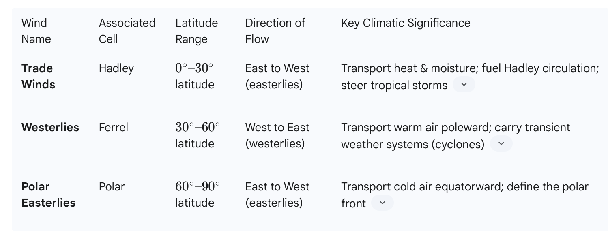
Resumen de los principales sistemas eólicos globales.
5.5.5. Corrientes en chorro y ondas de Rossby
Considerando que los cambios verticales en la velocidad del viento son proporcionales al gradiente horizontal de temperatura, las regiones con fuertes contrastes de temperatura dan lugar a fuertes vientos del oeste en altura, conocidas como corrientes en chorro. Estas estrechas y rápidas cintas de aire se forman en la troposfera superior a lo largo de pronunciados gradientes de temperatura y presión.
La corriente en chorro subtropical se genera en el límite polar de la Celda de Hadley. A medida que el aire se desplaza hacia el polo desde el ecuador en la troposfera superior, la conservación del momento angular provoca su aceleración hacia el este, produciendo fuertes vientos del oeste en altura. Este chorro se produce típicamente entre los 25° y los 35° de latitud, a altitudes de 12 a 15 km. Es relativamente constante durante todo el año, aunque su intensidad es mayor en invierno, y desempeña un papel clave en la separación de la circulación atmosférica tropical de la de latitudes medias.
La corriente en chorro polar, en cambio, se desarrolla en el límite entre las Celdas de Ferrel y Polares, cerca de los 60° de latitud, donde el contraste de temperatura entre el aire polar frío y el aire más cálido de latitudes medias es particularmente intenso. Esta región, conocida como frente polar, genera fuertes vientos del oeste en la troposfera superior a altitudes de aproximadamente 7 a 12 km. El chorro polar es más pronunciado en invierno, cuando los gradientes de temperatura entre el ecuador y los polos son mayores, y actúa como una corriente conductora para los ciclones extratropicales y las trayectorias de las tormentas en latitudes medias.
El efecto Coriolis, que desvía el aire en movimiento hacia la derecha en el hemisferio norte y hacia la izquierda en el hemisferio sur, es esencial para la formación de ambas corriente en chorro. Sin esta desviación, el aire que se desplaza hacia los polos simplemente viajaría de norte a sur; en cambio, la fuerza de Coriolis desvía estos flujos hacia el este, creando rápidas corrientes del oeste. La fuerza del efecto Coriolis aumenta con la latitud, lo que contribuye a determinar la posición e intensidad de las corrientes en chorro.
De esta manera, las corrientes en chorro subtropicales y polares pueden entenderse como características integrales del sistema de circulación general. El chorro subtropical refleja la dinámica del límite Hadley-Ferrel y la conservación del momento angular, mientras que el chorro polar surge de la fuerte baroclinicidad del límite Ferrel-Polar. Ambos chorros son cruciales para el clima y la meteorología global, ya que sus meandros, formados por las ondas de Rossby, controlan el desarrollo de los sistemas de tormentas y la distribución del calor y la humedad atmosférica a través de las latitudes.
Ecuaciones que describen la formación de corrientes en chorro
Balance geostrófico. La formación de las corrientes en chorro, tanto subtropicales como polares, puede comprenderse mediante las ecuaciones fundamentales de la dinámica atmosférica. En las capas superiores, los vientos a gran escala se aproximan bien mediante el equilibrio geostrófico, donde la fuerza de Coriolis equilibra la fuerza del gradiente de presión horizontal. Este equilibrio se puede expresar como:
Aquí, \(u_g, v_g\) son las componentes geostróficas del viento, \(f = 2 \Omega \sin \phi\) es el parámetro de Coriolis (\(\Omega\) representa la velocidad de rotación de la Tierra y \(\phi\) la latitud), \(\rho\) es la densidad del aire y \(p\) es la presión. Esta relación explica por qué los fuertes gradientes de presión en los niveles superiores, típicamente asociados con grandes contrastes de temperatura, provocan el desarrollo de fuertes vientos del oeste.
** Balance hidrostático**. La estructura vertical de la atmósfera se describe mediante el equilibrio hidrostático, que vincula los gradientes de presión atmosférica con la densidad del aire:
Este equilibrio conecta los campos de presión con la distribución vertical de la temperatura, lo que proporciona la base física de cómo los gradientes de temperatura horizontales se traducen en cizalladura vertical del viento.
Relación térmica del viento. La clave para comprender las corrientes en chorro es la relación térmica del viento, que vincula los cambios verticales del viento geostrófico con los gradientes horizontales de temperatura:
En esta expresión, \(R\) es la constante de los gases para el aire seco, \(T\) es la temperatura y \(p\) es la presión. En el caso del chorro subtropical, esta ecuación explica cómo el fuerte gradiente de temperatura entre el ecuador y las zonas subtropicales en niveles superiores (y la conservación del momento angular) produce un intenso flujo del oeste alrededor de los 30° de latitud. En cambio, en el caso del chorro polar, el marcado contraste de temperatura en el frente polar (\(\sim\) 60° de latitud) genera una fuerte cizalladura vertical del viento geostrófico, que se intensifica con la altura hacia el núcleo del chorro.
Conservación del momento angular. Es particularmente importante para el chorro subtropical. Para una parcela de aire que se desplaza hacia el polo desde el ecuador en la rama superior de la célula de Hadley, el momento angular absoluto puede escribirse como:
donde M es el momento angular absoluto, u es el viento zonal, a es el radio terrestre y phi es la latitud. A medida que el aire se desplaza hacia el polo, el factor cos phi disminuye y, para conservar M, el viento zonal u debe aumentar, lo que resulta en fuertes vientos del oeste característicos del chorro subtropical.
Viento térmico. A latitudes más altas, el chorro polar puede describirse principalmente mediante la relación del viento térmico. A lo largo del frente polar, el gradiente de temperatura meridional \(\partial T / \partial y\) es particularmente fuerte. De la ecuación del viento térmico, se deduce que:
Esto significa que la cizalladura vertical de los vientos geostróficos del oeste se intensifica con la altura, lo que conduce al desarrollo del chorro polar en la troposfera superior.
En resumen. El chorro subtropical se explica mejor mediante la conservación del momento angular que actúa dentro de la Célula de Hadley, con mejoras derivadas de la relación del viento térmico. El chorro polar, por otro lado, es principalmente consecuencia de la fuerte baroclinicidad del frente polar, descrita por el viento térmico. Por lo tanto, ambos chorros son expresiones dinámicas directas de cómo la atmósfera mantiene el equilibrio entre los gradientes de rotación, presión y temperatura.
Las corrientes en chorro no fluyen en línea recta, sino que serpentean en ondulaciones a gran escala llamadas ondas de Rossby. Estas ondas son un aspecto fundamental de la circulación general y constituyen el mecanismo principal para el intercambio de calor norte-sur (meridional). Las vaguadas de estas ondas permiten que el aire polar frío se desplace hacia el sur, hacia las latitudes medias, mientras que las dorsales transportan el aire subtropical cálido hacia el norte, hacia los polos. Estos meandros también desempeñan un papel crucial en la dirección de los sistemas meteorológicos y las trayectorias de las tormentas en todo el planeta.
La dinámica de la corriente en chorro polar es de particular importancia para los patrones climáticos globales. Su velocidad depende directamente de la diferencia de temperatura entre las regiones polares y las latitudes medias. A medida que el Ártico se calienta a un ritmo más rápido que el resto del planeta, este gradiente de temperatura disminuye. Un gradiente de temperatura reducido da como resultado una corriente en chorro polar más lenta. Cuando los vientos del oeste de la corriente en chorro disminuyen, sus meandros, u ondas de Rossby, se hacen más grandes y se desplazan hacia el este más lentamente. Esto puede provocar que los patrones climáticos se estanquen en una región durante un período prolongado, lo que da lugar a fenómenos meteorológicos extremos y persistentes, como olas de calor, inundaciones, sequías y períodos de frío prolongados. Por lo tanto, el comportamiento cada vez más ondulante de la corriente en chorro polar no es un fenómeno aleatorio, sino una consecuencia predecible de un sistema climático cambiante, lo que demuestra cómo una perturbación en una parte del sistema puede tener efectos globales generalizados.
5.6. Circulación atmosférica real
5.6.1. Cambios estacionales
5.6.1.1. Desplazamiento de las corrientes de chorro y de las celdas de circulación
La circulación general de la atmósfera no es fija; experimenta importantes cambios estacionales en respuesta a la migración del calentamiento solar y los contrastes térmicos resultantes entre el ecuador y los polos. Durante el verano, en cada hemisferio, el calentamiento de las superficies terrestres y oceánicas provoca la expansión de las celdas de Hadley, Ferrel y polares y su desplazamiento hacia los polos, mientras que en invierno, estas células se contraen y se desplazan hacia el ecuador. Estos cambios se acompañan de los correspondientes movimientos de las corrientes en chorro subtropicales y polares, que siguen el desplazamiento latitudinal de los gradientes térmicos y los sistemas de presión que los impulsan.
Las corrientes en chorro subtropicales se fortalecen y migran hacia los polos durante el verano, lo que mejora el transporte de momento y humedad en altura, mientras que las corrientes en chorro polares se desplazan de forma similar, modulando la posición de las trayectorias de las tormentas y los ciclones extratropicales. En realidad, el desplazamiento estacional de las células de circulación y las corrientes en chorro está fuertemente influenciado por la asimetría de los continentes y océanos, así como por las características topográficas. Las grandes masas continentales se calientan y enfrían más rápidamente que los océanos, lo que altera los gradientes de presión locales y provoca desviaciones de la circulación zonalmente simétrica idealizada. Por ejemplo, el desplazamiento estival hacia el norte de la célula de Hadley sobre Asia contribuye al monzón del sur de Asia, mientras que la circulación antártica permanece relativamente estable debido al océano circundante.
Estos cambios estacionales rigen los patrones climáticos regionales al modular la ubicación e intensidad de los sistemas de alta y baja presión, los cinturones de precipitación y los regímenes de viento. Por consiguiente, comprender el movimiento estacional de los chorros y las celdas de circulación es crucial para interpretar la variabilidad atmosférica real, incluyendo los monzones, las trayectorias de las tormentas y los sistemas meteorológicos de latitudes medias, que se desvían del modelo idealizado de tres células debido a los contrastes entre la tierra y el océano, la topografía y otros factores regionales.
5.6.1.2. Migración estacional de la ITCZ y monsones
Los monzones son sistemas eólicos estacionales a gran escala que se caracterizan por una inversión de la dirección predominante del viento entre verano e invierno, impulsada principalmente por el calentamiento diferencial de las superficies terrestres y oceánicas. Durante la estación cálida, las masas continentales se calientan más rápidamente que los océanos circundantes, creando regiones de baja presión sobre los continentes. Este contraste de presión atrae aire húmedo de los océanos adyacentes, generando fuertes vientos terrestres y las consiguientes precipitaciones intensas. Por el contrario, en la estación fría, la tierra se enfría más rápidamente que el océano, estableciendo regiones de alta presión sobre los continentes. El aire fluye entonces hacia los océanos, produciendo vientos marinos y condiciones generalmente secas.
El desarrollo de los sistemas monzónicos está estrechamente vinculado a la migración estacional de la Zona de Convergencia Intertropical (ITCZ) y a la configuración real de los continentes y la topografía. Cadenas montañosas como el Himalaya y las Tierras Altas de Etiopía intensifican el contraste térmico, reforzando la circulación del monzón de verano e influyendo en la distribución regional de las precipitaciones. Los monzones representan una modificación de las circulaciones idealizadas de Hadley y Ferrel: los mecanismos básicos de los gradientes de presión meridionales y la deflexión de Coriolis se mantienen, pero la asimetría espacial de continentes, océanos y topografía introduce una fuerte variabilidad estacional ausente en los modelos de circulación simples y zonalmente simétricos.
Los monzones tienen profundos impactos climáticos y sociales, especialmente en el sur y sudeste de Asia, África occidental y el norte de Australia. El cambio estacional de los vientos regula el momento y la intensidad de las precipitaciones, lo que influye en la agricultura, los recursos hídricos y la dinámica de los ecosistemas. Su variabilidad también se ve modulada por oscilaciones climáticas a gran escala, como El Niño-Oscilación del Sur (ENOS), que puede debilitar o retrasar el inicio del monzón, lo que ilustra la interacción entre los patrones de circulación regional y la variabilidad climática global.
5.6.2. Principales sistemas de presión
5.6.2.1. Sistemas de alta presión subtropicales
Los sistemas de alta presión subtropicales son características semipermanentes de la circulación general de la atmósfera, típicamente ubicados entre los 25° y los 35° de latitud en ambos hemisferios. Surgen como consecuencia directa de la circulación de Hadley a gran escala: el aire cálido asciende cerca del ecuador, diverge en altura y luego desciende en las zonas subtropicales. Este movimiento descendente comprime y calienta el aire adiabáticamente, produciendo una región persistente de alta presión superficial.
Estos anticiclones suelen organizarse en centros diferenciados, como el anticiclón de las Azores en el Atlántico Norte, el anticiclón del Pacífico en el Pacífico Norte y los anticiclones del Atlántico Sur, el Pacífico Sur y el sur de la India en el hemisferio sur. Su intensidad y posición fluctúan estacionalmente, siguiendo la migración aparente del Sol y el desplazamiento asociado de la Zona de Convergencia Intertropical (ITZ). En verano, los anticiclones subtropicales se expanden y se desplazan hacia los polos, mientras que en invierno se contraen y se desplazan hacia el ecuador.
La dinámica de estos sistemas tiene profundas implicaciones climáticas. El aire descendente en las altas presiones subtropicales inhibe la formación de nubes y precipitaciones, lo que da lugar a la formación de los principales desiertos del mundo a lo largo de sus márgenes, como los desiertos del Sahara, el Kalahari y el australiano. En sus flancos occidentales, se generan vientos alisios (trade winds) persistentes que impulsan corrientes oceánicas como las de Canarias y California, que a su vez influyen en las surgencias costeras y la productividad marina. En sus flancos orientales, la interacción con los vientos del oeste de latitudes medias ayuda a dirigir los ciclones extratropicales.
Por lo tanto, los sistemas de altas presiones subtropicales actúan como nodos críticos en la circulación global, vinculando la convección tropical, las interacciones océano-atmósfera y el clima de las regiones subtropicales y de latitudes medias. Su variabilidad, influenciada por oscilaciones a gran escala como el ENSO y la Oscilación del Atlántico Norte (NAO), subraya su papel como reguladores del tiempo y el clima en vastas regiones de la Tierra.
5.6.2.2. Sistemas de bajas presiones subpolares
Los sistemas de bajas presiones subpolares son estructuras semipermanentes de la circulación atmosférica ubicadas alrededor de los 60° de latitud en ambos hemisferios. Surgen de la convergencia de dos masas de aire distintas: el aire relativamente cálido, que se desplaza hacia los polos, proveniente de los vientos del oeste en latitudes medias, y el aire frío, que se desplaza hacia el ecuador, proveniente de los vientos del este polares. Esta convergencia crea el frente polar, una zona de fuertes gradientes horizontales de temperatura donde se desarrolla inestabilidad baroclínica, lo que da lugar a una frecuente actividad ciclónica.
Estos sistemas, a menudo denominados la Baja Presión de las Aleutianas en el Pacífico Norte y la Baja Presión de Islandia en el Atlántico Norte, son particularmente pronunciados durante el invierno boreal, cuando el contraste entre las masas de aire polares y subtropicales es más intenso. En el hemisferio sur, un cinturón circumpolar de bajas presiones rodea la Antártida, lo que refleja la ausencia de grandes masas continentales que interrumpan el flujo del oeste.
Los procesos dinámicos que sustentan las bajas presiones subpolares están vinculados a la circulación de las celdas de Ferrel y al transporte asociado de calor y momento hacia los polos. La ciclogénesis a lo largo del frente polar redistribuye la energía entre los trópicos y los polos, convirtiendo a estas regiones en centros clave para el intercambio global de calor. La variabilidad en la intensidad y la posición de las bajas presiones subpolares tiene importantes consecuencias climáticas. Por ejemplo, los cambios en la depresión islandesa influyen fuertemente en la Oscilación del Atlántico Norte (OAN), que regula las trayectorias de las tormentas, los patrones de precipitación y las anomalías de temperatura en Europa, Norteamérica y el norte de África.
En resumen, los sistemas de bajas presiones subpolares representan componentes cruciales de la circulación atmosférica general. Forman límites dinámicos entre las masas de aire de latitudes medias y polares, sirven como motores del desarrollo de ciclones extratropicales y desempeñan un papel central en la regulación de la variabilidad meteorológica y climática a escala regional y hemisférica.
5.6.2.3. Sistemas de alta presión polar
Los sistemas de alta presión polar son estructuras semipermanentes centradas en las regiones ártica y antártica, generalmente ubicadas alrededor de los 90° de latitud. Surgen principalmente debido al enfriamiento radiativo de la atmósfera polar, que crea masas de aire densas y frías. La acumulación de este aire frío cerca de la superficie aumenta la presión atmosférica, estableciendo una cúpula de alta presión sobre los polos. Estos sistemas representan la rama descendente de la celda polar, el tercer componente del modelo tricelular de circulación atmosférica.
Los anticiclones polares son generalmente más débiles y menos persistentes en el hemisferio norte que en el hemisferio sur. Esta asimetría se debe a la presencia de continentes y a la variabilidad topográfica en el Ártico, que interrumpen la continuidad del sistema de alta presión. En cambio, sobre la Antártida, la vasta y elevada capa de hielo y su extremo enfriamiento radiativo producen un sistema de alta presión más intenso y estable durante gran parte del año.
Los vientos superficiales dentro de los*anticiclones polares fluyen hacia afuera y son desviados por la fuerza de Coriolis, generando los vientos polares del este, que soplan hacia las regiones subpolares. Estos vientos contribuyen al mantenimiento del frente polar, donde convergen con los vientos del oeste de latitudes medias, lo que alimenta la actividad ciclónica e influye en las trayectorias de las tormentas.
Desde el punto de vista climático, los sistemas de alta presión polar contribuyen a las condiciones de frío extremo y aridez típicas de las regiones polares. Inhiben el movimiento vertical y la formación de nubes, favoreciendo cielos despejados y precipitaciones muy bajas, a menudo denominadas desiertos polares. La variabilidad en su intensidad y posición puede modular el intercambio de calor y humedad entre las regiones polares y de latitudes medias, con importantes implicaciones para la dinámica climática y los procesos de amplificación polar.
5.6.3. Influencia de la topografía
Los modelos idealizados de circulación atmosférica, como el modelo de celda única de Hadley o el modelo de tres celdas (Hadley, Ferrel y Polar), asumen una Tierra uniforme y cubierta de océanos, sin continentes ni montañas. Estos modelos conceptuales idealizados son valiosos porque resaltan el papel fundamental del calentamiento solar diferencial, el efecto Coriolis y el transporte de energía a gran escala. Sin embargo, la circulación real de la atmósfera se aleja de manera importante de estos modelos simplificados debido a la influencia de los contrastes tierra-mar y, fundamentalmente, debido a la influencia de la topografía terrestre.
Las grandes cordilleras, como el Himalaya en Asia, los Andes enSudamérica o las Montañas Rocosas en USA, actúan como barreras físicas que interrumpen el flujo de vientos zonales y generan ondas a escala planetaria, conocidas como ondas estacionarias de Rossby. Estas ondas alteran la posición e intensidad de las corrientes en chorro, modifican las trayectorias de las tormentas y contribuyen a las asimetrías climáticas regionales entre los hemisferios. Por ejemplo, la meseta tibetana intensifica el monzón asiático al calentar la atmósfera suprayacente, mientras que los Andes canalizan el chorro de bajo nivel en Sudamérica, lo que influye en los patrones de precipitación en las zonas subtropicales.
Además, las cordilleras favorecen la elevación orográfica, impulsando el aire húmedo hacia arriba y generando precipitaciones en las laderas de barlovento, a la vez que crean sombras de lluvia en las laderas de sotavento. Esta modificación local y regional de la circulación y los patrones de precipitación no está presente en los modelos idealizados, que asumen condiciones de contorno horizontalmente homogéneas.
Por lo tanto, si bien los modelos idealizados de circulación atmosférica proporcionan una base conceptual útil para comprender la dinámica atmosférica a escala global, la circulación real está fuertemente condicionada por la distribución desigual de los continentes y la topografía terrestre. Estas características geográficas introducen asimetrías, generan ondas estacionarias y modulan tanto los climas regionales como las características de la circulación a gran escala de maneras que no pueden ser captadas por marcos simples e idealizados.
5.6.4. Interacciones atmósfera-océano
Si bien la atmósfera es el principal medio para la redistribución rápida y a gran escala del calor, su función no puede entenderse aisladamente de los océanos. Ambos forman un sistema climático único y profundamente interconectado. Los océanos actúan como un enorme depósito de calor, almacenando y transportando grandes cantidades de energía a lo largo del tiempo.
Las corrientes oceánicas, impulsadas principalmente por los vientos atmosféricos, funcionan como una enorme cinta transportadora, transportando agua caliente desde el ecuador hacia los polos y agua fría de vuelta a los trópicos. La Corriente del Golfo, por ejemplo, transporta agua ecuatorial cálida al Atlántico Norte, lo que proporciona a Europa Occidental un clima mucho más templado de lo que su latitud sugeriría.
El ejemplo más claro de esta interacción océano-atmósfera es El Niño-Oscilación del Sur (ENSO). El ENSO es una fluctuación natural y recurrente de las temperaturas oceánicas y los patrones de viento en el Pacífico tropical que tiene efectos de gran alcance en el clima global. En condiciones normales, los fuertes vientos alisios empujan las aguas superficiales cálidas hacia el oeste a través del Pacífico, lo que genera baja presión y abundantes precipitaciones en Indonesia. Un fenómeno de El Niño ocurre cuando estos vientos alisios se debilitan, permitiendo que las aguas cálidas se desplacen hacia el este, en dirección a la costa de Sudamérica. Este cambio en la temperatura superficial del mar altera fundamentalmente los patrones de circulación atmosférica en todo el mundo, lo que provoca una cascada de anomalías meteorológicas. Por ejemplo, los fenómenos de El Niño se asocian con una disminución de la actividad de huracanes en el Atlántico, pero con un aumento de los huracanes en el Pacífico Oriental, así como con sequías en Australia e Indonesia e inundaciones en Perú. La fase opuesta,
Por otro lado, La Niña se caracteriza por vientos alisios más fuertes de lo normal y temperaturas superficiales del mar más frías que el promedio en el Pacífico Oriental, con un conjunto inverso de impactos meteorológicos globales.
Esta dinámica demuestra que el clima de la Tierra es un sistema de retroalimentaciones complejas e interactivas. Los vientos atmosféricos pueden impulsar las corrientes oceánicas, pero un cambio en la temperatura del océano puede retroalimentar la atmósfera, alterando los patrones globales de viento, incluyendo la corriente en chorro. Esta intrincada relación bidireccional revela que la atmósfera y los océanos no son simplemente componentes que interactúan, sino partes inseparables de un sistema único y altamente sensible cuya variabilidad interna puede modular profundamente el clima global.
En particular, la Corriente de Humboldt es una corriente oceánica fría que fluye hacia el norte a lo largo de la costa occidental de Sudamérica, desde el sur de Chile hasta el norte de Perú. Originada en el Océano Antártico, transporta aguas frías y ricas en nutrientes desde las altas latitudes hacia el ecuador. Su dinámica se ve reforzada por los persistentes vientos alisios del sureste, que impulsan las aguas superficiales mar adentro y favorecen la surgencia costera. Este proceso de surgencia sustenta uno de los ecosistemas marinos biológicamente más productivos del mundo, sustentando vastas pesquerías e influyendo en los climas locales.
Para Chile, la Corriente de Humboldt desempeña un papel fundamental en la configuración del clima costero y regional. Las aguas superficiales frías reducen las temperaturas superficiales del mar, reduciendo la evaporación y, por lo tanto, limitando la humedad atmosférica. Como consecuencia, gran parte de la costa chilena, en particular el desierto de Atacama en el norte, permanece extremadamente árida a pesar de su proximidad al océano Pacífico. Además, la corriente ayuda a mantener la inversión térmica en la atmósfera inferior, lo que suprime la mezcla vertical y el desarrollo de nubes, restringiendo aún más las precipitaciones. Hacia el centro y sur de Chile, la corriente modera las temperaturas costeras, contribuyendo a veranos más frescos y a un clima relativamente estable. En resumen, la Corriente de Humboldt es un impulsor clave del gradiente climático característico de Chile (desde el hiperárido norte hasta las latitudes medias más húmedas), al tiempo que sustenta los ricos recursos marinos del país.
5.7. Oscilaciones climáticas de gran escala
5.7.1. El Niño-Oscilación del Sur (ENSO)
El Niño-Oscilación del Sur (ENSO) es el modo más importante de variabilidad climática interanual en el Pacífico tropical, con una amplia influencia en los regímenes meteorológicos e hidrológicos globales. El ENSO no tiene un período de recurrencia perfectamente regular, pero en general, los eventos ENSO en el Pacífico central y sur ocurren aproximadamente cada 2 a 7 años. ENSO se refiere al fenómeno acoplado océano-atmósfera que implica fluctuaciones periódicas en las temperaturas superficiales del mar (SST) en el Pacífico ecuatorial central y oriental, junto con cambios asociados en la circulación atmosférica. Sus dos fases opuestas se identifican comúnmente como El Niño (fase cálida) y La Niña (fase fría). Estos eventos están vinculados a la Oscilación del Sur, una oscilación a gran escala de la presión atmosférica entre el Pacífico occidental y oriental, medida mediante el Índice de Oscilación del Sur (SOI).
Durante los El Niño, el calentamiento anómalo del Pacífico ecuatorial oriental reduce el gradiente de temperatura este-oeste, debilitando los vientos alisios. Esto provoca la supresión del afloramiento normal de aguas frías y ricas en nutrientes a lo largo de la costa sudamericana y un desplazamiento de la actividad convectiva del Pacífico occidental al central y oriental. Por el contrario, durante los La Niña, las temperaturas de la superficie del mar (SST) inferiores al promedio intensifican el gradiente de temperatura zonal, fortaleciendo los vientos alisios y potenciando el afloramiento, lo que refuerza el predominio de condiciones secas y estables a lo largo de la costa sudamericana.
Debido a su importancia en el clima global, se ha puesto en operación un ared de boyas que permite monitorear las condiciones oceánicas del Pacífico ecuatorial, dividiéndolo en cuatro regiones. Las regiones que tienen mayor interés para el clima de Chile son las zonas Niño 3 y Niño 3.4.
{kind=link}
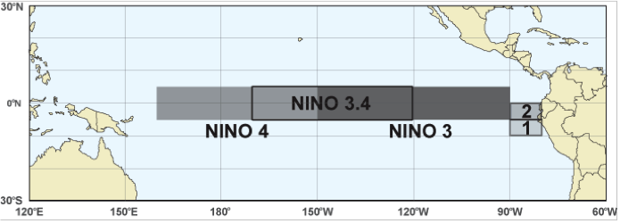
Principales patrones de viento a escala global.
El ENSO modula fuertemente el clima de Chile, pero sus impactos varían según la latitud y dependen de la fase de la oscilación. En el norte de Chile, incluyendo el hiperárido desierto de Atacama, las precipitaciones son generalmente escasas en condiciones normales. Sin embargo, fuertes episodios de El Niño pueden desencadenar eventos inusuales de precipitación de verano, particularmente en el Altiplano y los márgenes del desierto, a veces causando inundaciones y deslizamientos de tierra en cuencas típicamente secas. En el centro de Chile (30°–38°S), donde la precipitación está dominada por el paso de sistemas frontales de latitudes medias durante el invierno, El Niño tiende a producir condiciones más húmedas que el promedio. Esto ocurre porque las alteraciones de las SST del Pacífico y la circulación atmosférica desplazan la corriente en chorro subtropical y las trayectorias de las tormentas hacia el ecuador, aumentando la actividad frontal y las precipitaciones en esta región. Por el contrario, los eventos de La Niña suelen estar asociados con inviernos más secos, lo que puede exacerbar la escasez de agua y las condiciones de sequía. En el sur de Chile (al sur de los 40°S), la influencia del ENSO es más débil debido al control predominante de las trayectorias de tormentas del oeste, aunque aún se han detectado anomalías en las precipitaciones y los caudales fluviales durante eventos fuertes. Más allá de las precipitaciones, el ENSO afecta a los sistemas hidrológicos, la agricultura, la producción energética y la pesca en todo el país. Por ejemplo, el aumento de las precipitaciones y la acumulación de nieve relacionados con El Niño en los Andes centrales contribuye a mayores caudales fluviales en primavera y verano, mejorando la disponibilidad de agua para riego y energía hidroeléctrica. Por otro lado, los años de La Niña suelen coincidir con una reducción de la capa de nieve andina, niveles más bajos de los embalses y un mayor riesgo de sequías prolongadas, como se observó en la «megasequía» de 2010-2019.
En general, el fenómeno del ENSO introduce una importante variabilidad climática en Chile, que se superpone a su gradiente climático latitudinal y a la influencia de la Corriente de Humboldt y los Andes. Comprender sus mecanismos e impactos es crucial para anticipar extremos hidrológicos, planificar la gestión de los recursos hídricos y mitigar los riesgos para la sociedad y los ecosistemas chilenos.
5.7.2. La Oscilación Decadal del Pacífico (PDO)
La Oscilación Decadal del Pacífico (PDO) es un patrón de variabilidad climática océano-atmósfera a largo plazo, caracterizado por fluctuaciones en las temperaturas superficiales del mar (SST) en el Océano Pacífico Norte, con fases alternas que persisten durante escalas de tiempo decadales (típicamente de 20 a 30 años). Si bien conceptualmente es similar a El Niño-Oscilación del Sur (ENSO), la PDO opera en horizontes temporales más largos y se identifica por un patrón específico de SST: una anomalía cálida (positiva) o fría (negativa) en el Pacífico Norte oriental y central, acompañada de una anomalía opuesta en el Pacífico occidental y mares adyacentes. Estas fases se asocian con cambios en la circulación atmosférica, en particular en la depresión de las Aleutianas, que modula los patrones de viento, las corrientes oceánicas y los flujos de calor en la cuenca del Pacífico.
Si bien la PDO se define principalmente en el hemisferio norte, sus impactos se extienden al hemisferio sur, influyendo en las precipitaciones, la temperatura y los sistemas hidrológicos en países como Chile. La PDO a menudo interactúa con el ENSO, amplificando o atenuando sus efectos. Por ejemplo, cuando una fase positiva de la PDO coincide con El Niño, los impactos climáticos en Chile, en particular las condiciones más húmedas en la región central, tienden a ser más pronunciados. Por el contrario, una PDO negativa combinada con La Niña puede intensificar las condiciones de sequía, como se ha observado en las últimas décadas.
En el norte de Chile, donde predomina la aridez, la señal de la PDO es débil, pero puede influir indirectamente en las precipitaciones mediante su modulación de la actividad del ENSO y los cambios en la circulación subtropical. En el centro de Chile (30°–38°S), la PDO tiene una mayor influencia. Las fases positivas de PDO generalmente están vinculadas a un aumento de la precipitación invernal, ya que la corriente en chorro subtropical y las trayectorias de las tormentas de latitudes medias se desplazan hacia el ecuador, lo que favorece a los sistemas frontales que llegan a esta latitud. Las fases negativas de PDO, por el contrario, tienden a reducir la precipitación, lo que aumenta la probabilidad de sequías y reduce la acumulación de nieve en los Andes. Esta variabilidad tiene consecuencias directas para los recursos hídricos, la agricultura y la producción hidroeléctrica, dada la fuerte dependencia de Chile central de la precipitación invernal y el deshielo. En el sur de Chile (al sur de los 40°S), las influencias de PDO son menos robustas pero aún detectables, particularmente en los registros hidrológicos. La variabilidad del caudal en grandes cuencas fluviales ha mostrado fluctuaciones a escala decenal que se alinean con las fases de PDO, lo que refleja su modulación de los regímenes de precipitación y temperatura. Además, las largas escalas de tiempo de PDO la convierten en una condición de fondo importante que puede exacerbar o aliviar la variabilidad a corto plazo impuesta por ENSO. Por ejemplo, la persistencia de una fase negativa de la PDO desde finales de la década de 1990 se ha vinculado a la intensificación de la «megasequía» en la zona central de Chile (2010-2019), al favorecer condiciones más secas que el promedio y agravar los efectos de los recurrentes episodios de La Niña.
En resumen, la PDO representa un componente crítico de la variabilidad climática de baja frecuencia en la cuenca del Pacífico, con importantes implicaciones para el clima y los recursos hídricos de Chile. Su influencia es más evidente en la zona central de Chile, donde la agricultura, el suministro urbano y los sistemas energéticos son muy sensibles a la variabilidad de las precipitaciones. Comprender la PDO y su interacción con el ENSO es esencial para mejorar los pronósticos climáticos a largo plazo, la planificación de los recursos hídricos y la gestión de riesgos en Chile, especialmente bajo la presión adicional del cambio climático antropogénico.
5.7.3. El Modo Anular del Sur (SAM)
El Modo Anular del Sur (SAM), también conocido como Oscilación Antártica, es el modo dominante de variabilidad atmosférica en las zonas extratropicales del Hemisferio Sur. Se caracteriza por desplazamientos a gran escala de norte a sur en el cinturón de vientos del oeste que rodea la Antártida, conocido como chorro de latitudes medias. Estos desplazamientos se deben a cambios en el gradiente de presión entre las latitudes medias y altas de la Antártida. El SAM alterna entre dos fases: positiva y negativa, cada una con distintas implicaciones climáticas.
En la fase positiva, la presión atmosférica es inferior a la normal sobre la Antártida y superior a la normal en las latitudes medias. Esto intensifica y contrae los vientos circumpolares del oeste más cerca del continente antártico. En la fase negativa, ocurre lo contrario: el gradiente de presión se debilita, los vientos del oeste se expanden hacia el ecuador y las trayectorias de las tormentas se desplazan hacia el norte. Estas oscilaciones operan en escalas temporales que van desde la semana hasta la década, pero su frecuencia y persistencia se ven influenciadas por factores externos como el agotamiento del ozono estratosférico y las emisiones antropogénicas de gases de efecto invernadero. Por ejemplo, a finales del siglo XX, el agotamiento del ozono estratosférico contribuyó a una tendencia hacia la fase positiva del SAM, especialmente en el verano austral.
Los impactos del SAM en el clima chileno son sustanciales, pero varían significativamente según la latitud. En el sur de Chile (al sur de los 40°S), donde la precipitación está fuertemente controlada por el paso de sistemas de tormentas del oeste, el SAM tiene una influencia directa. Una fase positiva del SAM tiende a desplazar las trayectorias de las tormentas hacia los polos, lo que resulta en condiciones más secas que el promedio en el sur de Chile y la región patagónica. Por el contrario, la fase negativa desplaza los vientos del oeste hacia el ecuador, lo que aumenta la precipitación en estas latitudes. Esto tiene importantes implicaciones hidrológicas para las cuencas hidrográficas que dependen de las lluvias invernales y la acumulación de nieve. En el centro de Chile (30°–38°S), la influencia del SAM es más débil, pero aún detectable, especialmente durante el invierno. Las fases negativas del SAM pueden contribuir a un aumento de la actividad frontal y la precipitación en esta región, mientras que las fases positivas suelen estar asociadas a una reducción de las precipitaciones, lo que agrava el riesgo de sequía. En el norte de Chile, la señal del SAM es mínima, ya que la precipitación suele ser escasa y está controlada por otros procesos a gran escala como el ENSO y el Anticiclón Boliviano.
El SAM también modula los patrones de temperatura en Chile. Las fases positivas se relacionan con condiciones más cálidas que el promedio en el centro de Chile debido a la reducción de la nubosidad y la precipitación, mientras que las regiones del sur suelen experimentar condiciones más frías y ventosas a medida que los vientos del oeste se intensifican cerca de la Antártida. En las fases negativas, el desplazamiento de las trayectorias de las tormentas hacia latitudes más bajas trae condiciones más frías y húmedas al centro y sur de Chile.
Es importante destacar que la interacción entre la SAM y otros modos climáticos, en particular el ENSO, puede reforzar o contrarrestar las anomalías climáticas. Por ejemplo, la reciente «megasequía» de 2010-2019 en el centro de Chile se debió principalmente a condiciones similares a La Niña, pero se vio exacerbada por el predominio de la fase positiva de la SAM, que suprimió las precipitaciones en las latitudes medias.
En resumen, la SAM es un factor crucial de la variabilidad climática en Chile, especialmente al sur de los 40°S, donde su influencia en las precipitaciones es más directa. Su tendencia a largo plazo hacia un estado más positivo ha contribuido a tendencias de sequía en algunas partes de Chile, con importantes consecuencias para los recursos hídricos, los ecosistemas y las actividades socioeconómicas. Comprender la dinámica de la SAM y sus interacciones con los forzamientos antropogénicos y otros modos de variabilidad es esencial para anticipar futuros riesgos hidrológicos e impactos climáticos en la región.
5.7.4. La Oscilación Madden-Julian (MJO)
La Oscilación Madden-Julian (MJO, por sus siglas en inglés) es el principal modo de variabilidad intraestacional en la atmósfera tropical, caracterizada por anomalías convectivas que se propagan hacia el este con períodos típicos de 30 a 60 días. Si bien se origina en los trópicos profundos, la MJO ejerce importantes influencias extratropicales a través de teleconexiones atmosféricas que alteran la circulación en latitudes medias, los flujos de humedad y el movimiento vertical. Sobre el suroeste de Sudamérica y Chile, múltiples estudios recientes de observación y modelado convergen en varios hallazgos consistentes que son directamente relevantes para el monitoreo climático y la predicción subestacional [BCT12, MRRH25, VVBohmS+24].
En primer lugar, la MJO modula la precipitación invernal sobre el centro y sur de Chile (aproximadamente 30°–45° S). Los análisis compuestos muestran que ciertas fases de la MJO y su evolución retardada se asocian estadísticamente con un aumento de la precipitación y de la frecuencia de precipitaciones intensas durante el invierno austral, mientras que otras fases corresponden a anomalías negativas de precipitación. Estas modulaciones de precipitación son más intensas y robustas durante los meses de invierno austral, cuando la trayectoria de las tormentas en latitudes medias y la guía de ondas extratropicales están activas y pueden recibir y amplificar eficientemente las perturbaciones tropicales [BCT12].
En segundo lugar, recientes estudios identifican múltiples vías dinámicas que conectan la convección de la MJO tropical con las anomalías de precipitación en Chile. Los mecanismos principales incluyen la excitación de trenes de ondas de Rossby que se proyectan hacia el Pacífico sureste (una respuesta similar a la del Pacífico Sudamericano, similar a la PSA), patrones de altura geopotencial anómalos que favorecen la actividad ciclónica aguas arriba de Chile, y oleadas de humedad de bajo nivel del norte o noroeste que potencian el ascenso orográfico a medida que el aire se topa con los Andes. El diagnóstico de flujo de actividad de las olas, el trazado de rayos y los compuestos de transporte de humedad demuestran que tanto las teleconexiones directas similares a la PSA como los trenes de ondas secundarios pueden operar, y su importancia relativa varía según el evento y las características intraestacionales de la OMJ [MRRH25].
En tercer lugar, la heterogeneidad en los impactos de la MJO es considerable. Estudios recientes destacan que las características estructurales de la MJO; como la amplitud convectiva, la extensión zonal y la velocidad de propagación; y el estado de fondo (ciclo estacional y fase ENSO) modulan la respuesta extratropical. Por lo tanto, no todos los eventos de la MJO producen el mismo impoacto en el tiempo atmosférico de Chile, pues algunos eventos generan fuertes respuestas de precipitación mediante trenes de ondas amplificados y transporte de humedad anómalo; mientras otros producen respuestas débiles o insignificantes. Las interacciones entre la MJO y el ENSO son particularmente importantes, ya que el ENSO altera la guía de ondas tropical-extratropical media y la disponibilidad de humedad, lo que mejora o reduce las teleconexiones de la MJO [CR23].
En cuarto lugar, existen implicaciones prácticas para la capacidad de pronóstico subestacional. Dado que la MJO es parcialmente predecible en escalas de tiempo subestacionales, su influencia detectable en la precipitación chilena sugiere una oportunidad para mejorar los pronósticos probabilísticos de períodos húmedos/secos y el riesgo de precipitación extrema con una antelación de 1 a 4 semanas, especialmente durante el invierno. Para aprovechar este potencial, los sistemas de pronóstico operativos y de investigación deberían combinar herramientas compuestas basadas en fases con diagnósticos a nivel de evento (flujo de actividad de las olas y transporte de humedad) y considerar el muestreo condicional por estado del ENSO [SI21].
Finalmente, aún quedan preguntas pendientes: (1) cómo difieren los eventos de MJO extremos o compuestos en la eficacia de la teleconexión; (2) el papel relativo de los ríos atmosféricos frente a la advección directa de humedad tropical durante los extremos vinculados a la MJO; y (3) cómo el cambio climático podría alterar la frecuencia, la estructura o los patrones de teleconexión de la MJO y, por consiguiente, la variabilidad de la precipitación en Chile. El estudio de Matus et al. [MRRH25] es emblemático de la reciente investigación mecanicista que aborda estas preguntas combinando técnicas compuestas con diagnósticos dinámicos para rastrear las vías desde la convección tropical hasta la precipitación en el suroeste de Sudamérica.
5.7.5. Impacto combinado de ENSO, PDO, SAM y MJO en el hidroclima de Chile
El hidroclima de Chile refleja los efectos combinados de ENSO, PDO, SAM y la MJO, que operan en diferentes escalas temporales: interanual, decenal, subestacional a multidecenal, y subseasonal-intraseasonal, respectivamente [MRRH25, GBR+20]. La superposición de estos modos de variabilidad explica la complejidad de las anomalías de precipitación y temperatura observadas en el país.
ENSO es el factor interanual dominante: El Niño favorece inviernos más húmedos en la zona central de Chile, mientras que La Niña promueve sequías, alterando la disponibilidad de agua en las principales cuencas [GBR+20, MA03].
PDO modula la influencia de ENSO: una fase positiva potencia los impactos de El Niño, mientras que una fase negativa refuerza los efectos de La Niña
SAM afecta principalmente al sur de Chile al modificar la posición de las tormentas del oeste, pero en fases positivas también puede suprimir las precipitaciones en la zona central, intensificando condiciones secas [GBR+20].
MJO introduce variabilidad intraestacional (30–60 días) modulando la ocurrencia de sistemas frontales y ríos atmosféricos que alcanzan Chile. Durante ciertas fases, la MJO favorece lluvias intensas en la zona centro-sur, mientras que en otras induce condiciones secas, actuando como un «puente dinámico» que conecta la variabilidad tropical con los climas extratropicales [MRRH25, Kan02].
Las interacciones entre estos cuatro modos son cruciales para comprender el hidroclima de Chile. Por ejemplo, la MJO puede amplificar o atenuar los efectos de ENSO: durante un El Niño fuerte, las fases húmedas de la MJO refuerzan la ocurrencia de precipitaciones extremas en la zona central, mientras que durante La Niña, fases secas de la MJO prolongan episodios de sequía. Asimismo, la influencia de la MJO sobre la actividad de los ríos atmosféricos puede ser modulada por el PDO a escala decadal, condicionando la recurrencia de eventos extremos. Por otro lado, cuando la SAM se encuentra en fase positiva, puede contrarrestar parcialmente los efectos húmedos inducidos por ciertas fases de la MJO en la zona central, desviando tormentas hacia el sur [MRRH25, GBR+20].
En síntesis, el ENSO proporciona la variabilidad a corto plazo, la PDO establece períodos húmedos o secos a escala decadal, la SAM modula la trayectoria de tormentas y distribución de lluvias en el sur, y la MJO introduce variaciones subseasonales que inciden en la ocurrencia de eventos extremos. Su interacción determina no solo las anomalías de precipitación.
5.8. Impactos en el clima y los recursos hídricos
La circulación atmosférica desempeña un papel fundamental en la configuración de los patrones de precipitación y, en consecuencia, en la disponibilidad de recursos hídricos. El movimiento del aire a gran escala, organizado en celdas de circulación y guiado por gradientes de presión y el efecto Coriolis, determina regiones de lluvias persistentes y aridez. Las áreas de aire ascendente asociadas con la Zona de Convergencia Intertropical (ITCZ) experimentan precipitaciones convectivas frecuentes, mientras que las regiones dominadas por aire descendente, como los cinturones de alta presión subtropicales, tienden a ser áridas. Los ciclones y sistemas frontales en latitudes medias contribuyen a la variabilidad de las precipitaciones en las zonas templadas, mientras que las circulaciones locales, como los monzones y las brisas marinas, modulan las precipitaciones estacional y regionalmente.
La variabilidad de la circulación atmosférica también influye en la ocurrencia de eventos hidrometeorológicos extremos. Las anomalías en los patrones de circulación a gran escala, como las asociadas con El Niño-Oscilación del Sur (ENOS), la Oscilación Decadal del Pacífico (PDO) o el Modo Anular del Sur (SAM), pueden provocar precipitaciones extremas, inundaciones o períodos secos prolongados. Estos fenómenos extremos afectan directamente la descarga de los ríos, la recarga de aguas subterráneas y la estabilidad de los ecosistemas naturales y gestionados. Comprender estos vínculos es crucial para anticipar inundaciones, sequías y otros fenómenos hidrológicos extremos, lo que permite una evaluación y mitigación de riesgos oportunas.
Por último, una gestión eficiente de los recursos hídricos requiere incorporar el conocimiento de la circulación atmosférica y su variabilidad intra e interanual. La planificación hidrológica, la operación de embalses, la programación del riego y la conservación de los ecosistemas dependen de predicciones precisas de los patrones de precipitación y los fenómenos extremos. Al integrar la información meteorológica y climatológica en las estrategias de gestión hídrica, es posible optimizar la asignación de agua, reducir la vulnerabilidad a inundaciones y sequías, y mantener la resiliencia de los ecosistemas acuáticos y terrestres. En consecuencia, la circulación atmosférica no solo influye en el clima, sino que también es un factor crucial para la gestión sostenible de los recursos hídricos y la protección de los ecosistemas que dependen de ellos.
5.9. Conclusión
La circulación atmosférica general es un mecanismo planetario complejo y elegante para mantener el equilibrio térmico global. Surge de una jerarquía de principios físicos, comenzando con el simple pero profundo efecto del calentamiento solar desigual en un planeta esférico en rotación. Los gradientes de temperatura y presión resultantes generan viento, pero el efecto Coriolis, consecuencia de la conservación del momento angular, es lo que modela estos vientos en los patrones predecibles a gran escala del modelo de tres celdas. Este modelo proporciona el marco esencial para comprender los principales sistemas eólicos del planeta, desde los alisios tropicales hasta los vientos del oeste en latitudes medias y los vientos del este polares.
Sin embargo, una comprensión verdaderamente experta reconoce que este marco es una idealización simplificada. La circulación real es un sistema complejo y dinámico en el que el transporte primario de calor se ve facilitado por una interacción constante entre diferentes escalas. La célula de Hadley es un potente motor convectivo alimentado desproporcionadamente por el calor latente liberado durante las tormentas tropicales. La circulación en latitudes medias está dominada por remolinos caóticos y transitorios que son más eficaces en el transporte de calor que la célula de Ferrel idealizada. Además, estos sistemas son dirigidos y modulados por corrientes de nivel superior, como la corriente en chorro polar, cuyos meandros son esenciales para el intercambio meridional de masas de aire.
Finalmente, todo este sistema atmosférico mantiene un diálogo continuo e inseparable con los océanos, como lo demuestran fenómenos como el ENSO. El clima de la Tierra es una entidad única e interconectada donde un cambio en un componente, ya sea un patrón de viento atmosférico o una anomalía de la temperatura oceánica, puede desencadenar una cascada de consecuencias que se extienden por todo el planeta. El delicado equilibrio de este equilibrio dinámico es vulnerable a las perturbaciones, como lo demuestra la forma en que los cambios antropogénicos en las temperaturas polares pueden alterar el comportamiento fundamental de la corriente en chorro, provocando fenómenos meteorológicos extremos más frecuentes y persistentes. Comprender este sistema, desde sus principios fundamentales hasta sus complejas retroalimentaciones, no es, por lo tanto, un mero ejercicio académico, sino una necesidad crucial para navegar en un mundo cambiante.
5.10. References
B. S. Barrett, J. F. Carrasco, and A. P. Testino. Madden-julian oscillation (mjo) modulation of atmospheric circulation and chilean winter precipitation. Journal of Climate, 25(5):1678–1688, 2012. Classic phase‐based composite analysis over central and south-central Chile. doi:10.1175/JCLI-D-11-00216.1.
F Matus, R Rondanelli, J Rutllant, and S Henderson. Mechanisms for the influence of the mjo on precipitation in southwestern south america. Journal of Geophysical Research: Atmospheres, 130(1):e2024JD041935, 2025. doi:10.1029/2024JD041935.
José Vicencio Veloso, Christoph Böhm, Jan H Schween, Ulrich Löhnert, and Susanne Crewell. The overlooked role of moist northerlies as a source of summer rainfall in the hyperarid atacama desert. Journal of Geophysical Research: Atmospheres, 129(21):e2024JD041021, 2024. doi:10.1029/2024JD041021.
Diego Campos and Roberto Rondanelli. Enso-related precipitation variability in central chile: the role of large scale moisture transport. Journal of Geophysical Research: Atmospheres, 128(17):e2023JD038671, 2023. doi:10.1029/2023JD038671.
Carl J Schreck III. Global survey of the mjo and extreme precipitation. Geophysical Research Letters, 48(19):e2021GL094691, 2021. doi:10.1029/2021GL094691.
René D Garreaud, Juan P Boisier, Roberto Rondanelli, Aldo Montecinos, Hector H Sepúlveda, and Daniel Veloso-Aguila. The central chile mega drought (2010–2018): a climate dynamics perspective. International Journal of Climatology, 40(1):421–439, 2020. doi:10.1002/joc.6219.
Aldo Montecinos and Patricio Aceituno. Seasonality of the enso-related rainfall variability in central chile and associated circulation anomalies. Journal of climate, 16(2):281–296, 2003. doi:10.1175/1520-0442(2003)016%3C0281:SOTERR%3E2.0.CO;2.
RP Kane. Precipitation anomalies in southern south america associated with a finer classification of el nino and la nina events. International Journal of Climatology: A Journal of the Royal Meteorological Society, 22(3):357–373, 2002. doi:10.1002/joc.713.